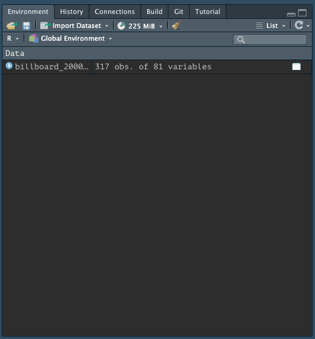
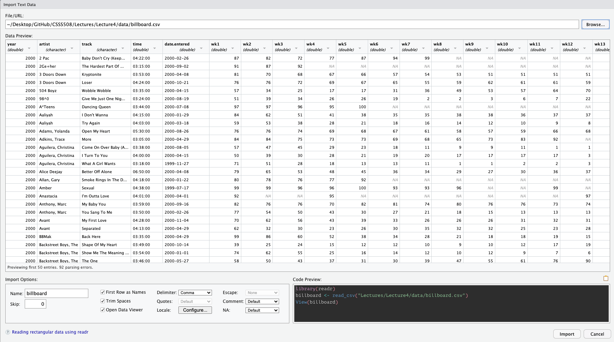
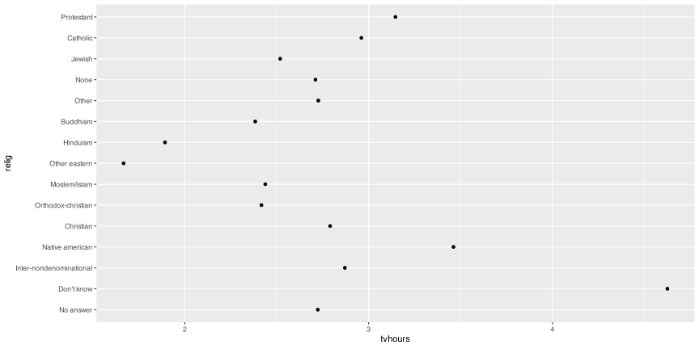
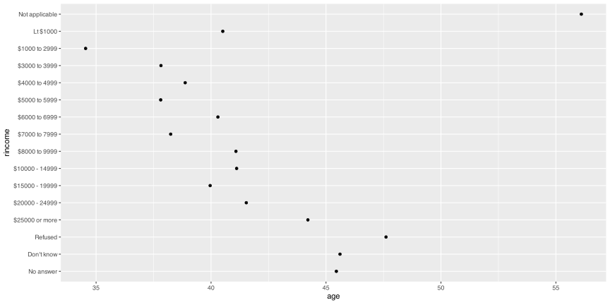
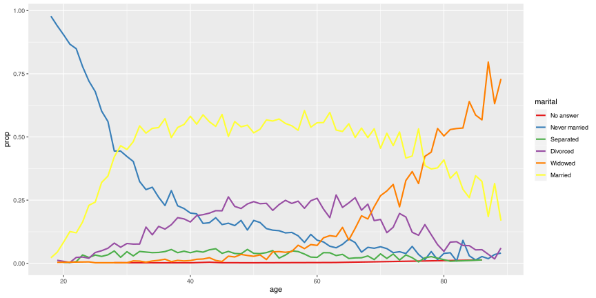
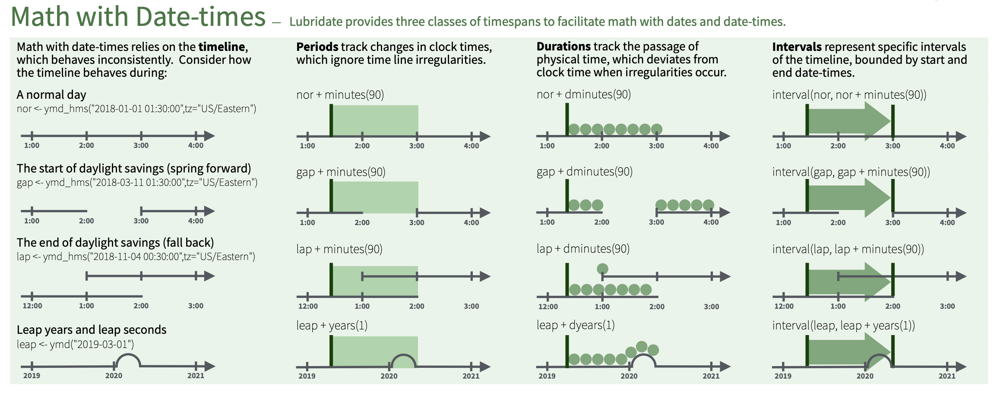
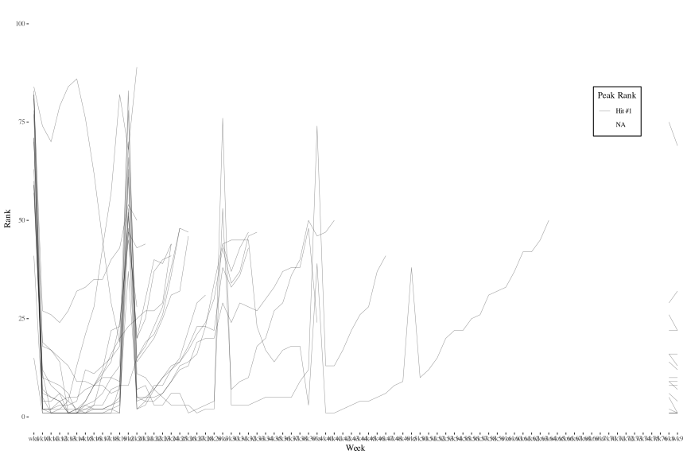

Importing, Exporting, and Cleaning Data
CS&SS 508 • Lecture 5
31 October 2023
Victoria Sass
Roadmap
Last time, we learned:
- Logical Operators
- Using
dplyrto:- Subset data
- Modify data
- Summarize data
- Merge data
Today, we will cover:
- Importing and Exporting Data
- Tidying and Reshaping Data
- Working with Factors
- Wrangling Date/Date-Time Data
Importing and Exporting Data
Data Packages
R has a big user base. If you are working with a popular data source, it will often have a devoted R package on CRAN or Github.
Examples:
-
WDI: World Development Indicators (World Bank) -
tidycensus: Census and American Community Survey -
quantmod: financial data from Yahoo, FRED, Google -
gssr: The General Social Survey Cumulative Data (1972-2021) -
psidR: Panel Study of Income Dynamics (basic & public datasets)
If you have an actual data file, you’ll have to import it yourself…
Delimited Text Files
Besides a package, it’s easiest when data is stored in a text file. The most commonly encountered delimitd file is a .csv.
A comma-separated values (.csv) file looks like the following:
"Subject","Depression","Sex","Week","HamD","Imipramine"
101,"Non-endogenous","Second",0,26,NA
101,"Non-endogenous","Second",1,22,NA
101,"Non-endogenous","Second",2,18,4.04305
101,"Non-endogenous","Second",3,7,3.93183
101,"Non-endogenous","Second",4,4,4.33073
101,"Non-endogenous","Second",5,3,4.36945
103,"Non-endogenous","First",0,33,NA
103,"Non-endogenous","First",1,24,NA
103,"Non-endogenous","First",2,15,2.77259readr
R has some built-in functions for importing data, such as read.table() and read.csv().
The readr package provides similar functions, like read_csv(), that have slightly better features:
- Faster!
- Better defaults (e.g. doesn’t automatically convert characters to factors)
- A bit smarter about dates and times
- Loading progress bars for large files
readr is one of the core tidyverse packages so loading tidyverse will load it too:
readr Importing Example
Let’s import some data about song ranks on the Billboard Hot 100 in 2000:
How do we know it loaded?
Let’s look at it!
> Rows: 317
> Columns: 81
> $ year <dbl> 2000, 2000, 2000, 2000, 2000, 2000, 2000, 2000, 2000, 200…
> $ artist <chr> "2 Pac", "2Ge+her", "3 Doors Down", "3 Doors Down", "504 …
> $ track <chr> "Baby Don't Cry (Keep...", "The Hardest Part Of ...", "Kr…
> $ time <time> 04:22:00, 03:15:00, 03:53:00, 04:24:00, 03:35:00, 03:24:…
> $ date.entered <date> 2000-02-26, 2000-09-02, 2000-04-08, 2000-10-21, 2000-04-…
> $ wk1 <dbl> 87, 91, 81, 76, 57, 51, 97, 84, 59, 76, 84, 57, 50, 71, 7…
> $ wk2 <dbl> 82, 87, 70, 76, 34, 39, 97, 62, 53, 76, 84, 47, 39, 51, 6…
> $ wk3 <dbl> 72, 92, 68, 72, 25, 34, 96, 51, 38, 74, 75, 45, 30, 28, 5…
> $ wk4 <dbl> 77, NA, 67, 69, 17, 26, 95, 41, 28, 69, 73, 29, 28, 18, 4…
> $ wk5 <dbl> 87, NA, 66, 67, 17, 26, 100, 38, 21, 68, 73, 23, 21, 13, …
> $ wk6 <dbl> 94, NA, 57, 65, 31, 19, NA, 35, 18, 67, 69, 18, 19, 13, 3…
> $ wk7 <dbl> 99, NA, 54, 55, 36, 2, NA, 35, 16, 61, 68, 11, 20, 11, 34…
> $ wk8 <dbl> NA, NA, 53, 59, 49, 2, NA, 38, 14, 58, 65, 9, 17, 1, 29, …
> $ wk9 <dbl> NA, NA, 51, 62, 53, 3, NA, 38, 12, 57, 73, 9, 17, 1, 27, …
> $ wk10 <dbl> NA, NA, 51, 61, 57, 6, NA, 36, 10, 59, 83, 11, 17, 2, 30,…
> $ wk11 <dbl> NA, NA, 51, 61, 64, 7, NA, 37, 9, 66, 92, 1, 17, 2, 36, N…
> $ wk12 <dbl> NA, NA, 51, 59, 70, 22, NA, 37, 8, 68, NA, 1, 3, 3, 37, N…
> $ wk13 <dbl> NA, NA, 47, 61, 75, 29, NA, 38, 6, 61, NA, 1, 3, 3, 39, N…
> $ wk14 <dbl> NA, NA, 44, 66, 76, 36, NA, 49, 1, 67, NA, 1, 7, 4, 49, N…
> $ wk15 <dbl> NA, NA, 38, 72, 78, 47, NA, 61, 2, 59, NA, 4, 10, 12, 57,…
> $ wk16 <dbl> NA, NA, 28, 76, 85, 67, NA, 63, 2, 63, NA, 8, 17, 11, 63,…
> $ wk17 <dbl> NA, NA, 22, 75, 92, 66, NA, 62, 2, 67, NA, 12, 25, 13, 65…
> $ wk18 <dbl> NA, NA, 18, 67, 96, 84, NA, 67, 2, 71, NA, 22, 29, 15, 68…
> $ wk19 <dbl> NA, NA, 18, 73, NA, 93, NA, 83, 3, 79, NA, 23, 29, 18, 79…
> $ wk20 <dbl> NA, NA, 14, 70, NA, 94, NA, 86, 4, 89, NA, 43, 40, 20, 86…
> $ wk21 <dbl> NA, NA, 12, NA, NA, NA, NA, NA, 5, NA, NA, 44, 43, 30, NA…
> $ wk22 <dbl> NA, NA, 7, NA, NA, NA, NA, NA, 5, NA, NA, NA, 50, 40, NA,…
> $ wk23 <dbl> NA, NA, 6, NA, NA, NA, NA, NA, 6, NA, NA, NA, NA, 39, NA,…
> $ wk24 <dbl> NA, NA, 6, NA, NA, NA, NA, NA, 9, NA, NA, NA, NA, 44, NA,…
> $ wk25 <dbl> NA, NA, 6, NA, NA, NA, NA, NA, 13, NA, NA, NA, NA, NA, NA…
> $ wk26 <dbl> NA, NA, 5, NA, NA, NA, NA, NA, 14, NA, NA, NA, NA, NA, NA…
> $ wk27 <dbl> NA, NA, 5, NA, NA, NA, NA, NA, 16, NA, NA, NA, NA, NA, NA…
> $ wk28 <dbl> NA, NA, 4, NA, NA, NA, NA, NA, 23, NA, NA, NA, NA, NA, NA…
> $ wk29 <dbl> NA, NA, 4, NA, NA, NA, NA, NA, 22, NA, NA, NA, NA, NA, NA…
> $ wk30 <dbl> NA, NA, 4, NA, NA, NA, NA, NA, 33, NA, NA, NA, NA, NA, NA…
> $ wk31 <dbl> NA, NA, 4, NA, NA, NA, NA, NA, 36, NA, NA, NA, NA, NA, NA…
> $ wk32 <dbl> NA, NA, 3, NA, NA, NA, NA, NA, 43, NA, NA, NA, NA, NA, NA…
> $ wk33 <dbl> NA, NA, 3, NA, NA, NA, NA, NA, NA, NA, NA, NA, NA, NA, NA…
> $ wk34 <dbl> NA, NA, 3, NA, NA, NA, NA, NA, NA, NA, NA, NA, NA, NA, NA…
> $ wk35 <dbl> NA, NA, 4, NA, NA, NA, NA, NA, NA, NA, NA, NA, NA, NA, NA…
> $ wk36 <dbl> NA, NA, 5, NA, NA, NA, NA, NA, NA, NA, NA, NA, NA, NA, NA…
> $ wk37 <dbl> NA, NA, 5, NA, NA, NA, NA, NA, NA, NA, NA, NA, NA, NA, NA…
> $ wk38 <dbl> NA, NA, 9, NA, NA, NA, NA, NA, NA, NA, NA, NA, NA, NA, NA…
> $ wk39 <dbl> NA, NA, 9, NA, NA, NA, NA, NA, NA, NA, NA, NA, NA, NA, NA…
> $ wk40 <dbl> NA, NA, 15, NA, NA, NA, NA, NA, NA, NA, NA, NA, NA, NA, N…
> $ wk41 <dbl> NA, NA, 14, NA, NA, NA, NA, NA, NA, NA, NA, NA, NA, NA, N…
> $ wk42 <dbl> NA, NA, 13, NA, NA, NA, NA, NA, NA, NA, NA, NA, NA, NA, N…
> $ wk43 <dbl> NA, NA, 14, NA, NA, NA, NA, NA, NA, NA, NA, NA, NA, NA, N…
> $ wk44 <dbl> NA, NA, 16, NA, NA, NA, NA, NA, NA, NA, NA, NA, NA, NA, N…
> $ wk45 <dbl> NA, NA, 17, NA, NA, NA, NA, NA, NA, NA, NA, NA, NA, NA, N…
> $ wk46 <dbl> NA, NA, 21, NA, NA, NA, NA, NA, NA, NA, NA, NA, NA, NA, N…
> $ wk47 <dbl> NA, NA, 22, NA, NA, NA, NA, NA, NA, NA, NA, NA, NA, NA, N…
> $ wk48 <dbl> NA, NA, 24, NA, NA, NA, NA, NA, NA, NA, NA, NA, NA, NA, N…
> $ wk49 <dbl> NA, NA, 28, NA, NA, NA, NA, NA, NA, NA, NA, NA, NA, NA, N…
> $ wk50 <dbl> NA, NA, 33, NA, NA, NA, NA, NA, NA, NA, NA, NA, NA, NA, N…
> $ wk51 <dbl> NA, NA, 42, NA, NA, NA, NA, NA, NA, NA, NA, NA, NA, NA, N…
> $ wk52 <dbl> NA, NA, 42, NA, NA, NA, NA, NA, NA, NA, NA, NA, NA, NA, N…
> $ wk53 <dbl> NA, NA, 49, NA, NA, NA, NA, NA, NA, NA, NA, NA, NA, NA, N…
> $ wk54 <dbl> NA, NA, NA, NA, NA, NA, NA, NA, NA, NA, NA, NA, NA, NA, N…
> $ wk55 <dbl> NA, NA, NA, NA, NA, NA, NA, NA, NA, NA, NA, NA, NA, NA, N…
> $ wk56 <dbl> NA, NA, NA, NA, NA, NA, NA, NA, NA, NA, NA, NA, NA, NA, N…
> $ wk57 <dbl> NA, NA, NA, NA, NA, NA, NA, NA, NA, NA, NA, NA, NA, NA, N…
> $ wk58 <dbl> NA, NA, NA, NA, NA, NA, NA, NA, NA, NA, NA, NA, NA, NA, N…
> $ wk59 <dbl> NA, NA, NA, NA, NA, NA, NA, NA, NA, NA, NA, NA, NA, NA, N…
> $ wk60 <dbl> NA, NA, NA, NA, NA, NA, NA, NA, NA, NA, NA, NA, NA, NA, N…
> $ wk61 <dbl> NA, NA, NA, NA, NA, NA, NA, NA, NA, NA, NA, NA, NA, NA, N…
> $ wk62 <dbl> NA, NA, NA, NA, NA, NA, NA, NA, NA, NA, NA, NA, NA, NA, N…
> $ wk63 <dbl> NA, NA, NA, NA, NA, NA, NA, NA, NA, NA, NA, NA, NA, NA, N…
> $ wk64 <dbl> NA, NA, NA, NA, NA, NA, NA, NA, NA, NA, NA, NA, NA, NA, N…
> $ wk65 <dbl> NA, NA, NA, NA, NA, NA, NA, NA, NA, NA, NA, NA, NA, NA, N…
> $ wk66 <lgl> NA, NA, NA, NA, NA, NA, NA, NA, NA, NA, NA, NA, NA, NA, N…
> $ wk67 <lgl> NA, NA, NA, NA, NA, NA, NA, NA, NA, NA, NA, NA, NA, NA, N…
> $ wk68 <lgl> NA, NA, NA, NA, NA, NA, NA, NA, NA, NA, NA, NA, NA, NA, N…
> $ wk69 <lgl> NA, NA, NA, NA, NA, NA, NA, NA, NA, NA, NA, NA, NA, NA, N…
> $ wk70 <lgl> NA, NA, NA, NA, NA, NA, NA, NA, NA, NA, NA, NA, NA, NA, N…
> $ wk71 <lgl> NA, NA, NA, NA, NA, NA, NA, NA, NA, NA, NA, NA, NA, NA, N…
> $ wk72 <lgl> NA, NA, NA, NA, NA, NA, NA, NA, NA, NA, NA, NA, NA, NA, N…
> $ wk73 <lgl> NA, NA, NA, NA, NA, NA, NA, NA, NA, NA, NA, NA, NA, NA, N…
> $ wk74 <lgl> NA, NA, NA, NA, NA, NA, NA, NA, NA, NA, NA, NA, NA, NA, N…
> $ wk75 <lgl> NA, NA, NA, NA, NA, NA, NA, NA, NA, NA, NA, NA, NA, NA, N…
> $ wk76 <lgl> NA, NA, NA, NA, NA, NA, NA, NA, NA, NA, NA, NA, NA, NA, N…Alternate Solution
When you import data from an external file you’ll also see it in the Global Environment tab in the upper-right pane of RStudio:
You can also import the data manually!
In the upper right-hand pane of RStudio (make sure you’re in the Environment tab), select:
Import Dataset > From Text (readr) and browse to the file on your computer1.
Once you’ve imported the data, you can copy/paste the import code from the console into your file!!
This makes the process reproducible!

Manual Data Import
Specifying NAs
NAs are technically logical (boolean) variables1 that indicate a missing value.
Skipping lines
Depending on how the data were input, there may be several lines that precede the beginning of the data table you’re interested in importing. You can skip these lines of metadata with the skip argument:
Variable names
read_csv will automatically take the first row as column names. If you want to rename them you can save yourself some time recoding later on if you specify your preferred variable names upfront with the col_names argument.
It takes a character vector to be used as column names (in their order of appearance).
billboard_renamed <- read_csv(file = "data/billboard.csv",
col_names = c("year", "artist", "track", "time", "date_entered",
paste("wk", 1:76, sep = "_")))
billboard_renamed |> names() |> head(10)- 1
-
paste“pastes” together the first argument to the second argument (separated by whatever is specified in thesepargument) as character strings. Since the first argument here is a singular value, it is repeated for the entire length of the vector in the second argument. The first several values ofpaste("wk", 1:76, sep = "_")are: wk_1, wk_2, wk_3, wk_4, wk_5, wk_6 - 2
-
Our first official usage of the pipe!
nameshere returns the column names of our data frame. . . .
If you don’t have any variable names you can specify that instead.
Snake Case
If you simply want to change your variables to snake case (all lower case; words separated by _), you can use the function clean_names() from the janitor package which replaces other punctuation separators with _.
# Download pacakge first
# install.packages("janitor")
# Create new object for renamed data
billboard_renamed <- billboard_2000_raw |>
janitor::clean_names(numerals = "right")
billboard_renamed |> names() |> head(10)- 1
- Run in the console first.
- 2
-
You can call a function without loading its package by specifying its package name followed by
::before it;
Thenumeralsargument specifies if you additionally want to put a separator before a number.
> [1] "year" "artist" "track" "time" "date_entered"
> [6] "wk_1" "wk_2" "wk_3" "wk_4" "wk_5"Other Data File Types with readr
The other functions in readr employ a similar approach to read_csv so the trick is just knowing which to use for what data type.
-
read_csv2is separated by semicolons (instead of commas) -
read_tsvis separated by tabs -
read_delimguesses the delimiter -
read_fwfreads in fixed-width-files -
read_tableis a variation offwfwhere columns are separated by white space -
read_logreads in Apache-style log files
Other Packages to Read in Data
There are a range of other ways, besides delimited files, that data are stored.
The following packages are part of the extended tidyverse and therefore operate with similar syntax and logic as readr.
Other Packages to Read in Data
There are a range of other ways, besides delimited files, that data are stored.
The following packages are part of the extended tidyverse and therefore operate with similar syntax and logic as readr.

- For Excel files (
.xlsor.xlsx), use packagereadxl1
Other Packages to Read in Data
There are a range of other ways, besides delimited files, that data are stored.
The following packages are part of the extended tidyverse and therefore operate with similar syntax and logic as readr.

- For Excel files (
.xlsor.xlsx), use packagereadxl1 - For Google Docs Spreadsheets, use package
googlesheets42
Other Packages to Read in Data
There are a range of other ways, besides delimited files, that data are stored.
The following packages are part of the extended tidyverse and therefore operate with similar syntax and logic as readr.

- For Excel files (
.xlsor.xlsx), use packagereadxl1 - For Google Docs Spreadsheets, use package
googlesheets42 - For Stata, SPSS, and SAS files, use package
haven3
How does readr parse different data types?
For each column in a data frame, readr functions pull the first 1000 rows and checks:
flowchart LR
id1((Variable))==>A(["1. Does it contain only F, T, FALSE, TRUE, or NA (ignoring case)?"])==>id2{{Logical}}
id1((Variable))==>B(["2. Does it contain only numbers (e.g., 1, -4.5, 5e6, Inf?)"])==>id3{{Number}}
id1((Variable))==>C(["3. Does it match the ISO8601 standard?"])==>id4{{Date/Date-time}}
id1((Variable))==>D(["4. None of the above"])==>id5{{String}}
style id1 fill:#1e4655,color:#c7cdac,stroke:#c7cdac
style id2 fill:#c7cdac,color:#1e4655,stroke:#1e4655
style id3 fill:#c7cdac,color:#1e4655,stroke:#1e4655
style id4 fill:#c7cdac,color:#1e4655,stroke:#1e4655
style id5 fill:#c7cdac,color:#1e4655,stroke:#1e4655
style A fill:#FFFFFF,color:#000000,stroke:#000000
style B fill:#FFFFFF,color:#000000,stroke:#000000
style C fill:#FFFFFF,color:#000000,stroke:#000000
style D fill:#FFFFFF,color:#000000,stroke:#000000
How does readr parse different data types?
For each column in a data frame, readr functions pull the first 1000 rows and checks:
flowchart LR
id1((Variable))==>A(["1. Does it contain only F, T, FALSE, TRUE, or NA (ignoring case)?"])==>id2{{Logical}}
id1((Variable))==>B(["2. Does it contain only numbers (e.g., 1, -4.5, 5e6, Inf?)"])==>id3{{Number}}
id1((Variable))==>C(["3. Does it match the ISO8601 standard?"])==>id4{{Date/Date-time}}
id1((Variable))==>D(["4. None of the above"])==>id5{{String}}
style id1 fill:#1e4655,color:#c7cdac,stroke:#c7cdac
style id2 fill:#1e4655,color:#c7cdac,stroke:#c7cdac
style id3 fill:#c7cdac,color:#1e4655,stroke:#1e4655
style id4 fill:#c7cdac,color:#1e4655,stroke:#1e4655
style id5 fill:#c7cdac,color:#1e4655,stroke:#1e4655
style A fill:#ffa07a,color:#000000,stroke:#000000
style B fill:#FFFFFF,color:#000000,stroke:#000000
style C fill:#FFFFFF,color:#000000,stroke:#000000
style D fill:#FFFFFF,color:#000000,stroke:#000000
How does readr parse different data types?
For each column in a data frame, readr functions pull the first 1000 rows and checks:
flowchart LR
id1((Variable))==>A(["1. Does it contain only F, T, FALSE, TRUE, or NA (ignoring case)?"])==>id2{{Logical}}
id1((Variable))==>B(["2. Does it contain only numbers (e.g., 1, -4.5, 5e6, Inf?)"])==>id3{{Number}}
id1((Variable))==>C(["3. Does it match the ISO8601 standard?"])==>id4{{Date/Date-time}}
id1((Variable))==>D(["4. None of the above"])==>id5{{String}}
style id1 fill:#1e4655,color:#c7cdac,stroke:#c7cdac
style id2 fill:#c7cdac,color:#1e4655,stroke:#1e4655
style id3 fill:#1e4655,color:#c7cdac,stroke:#c7cdac
style id4 fill:#c7cdac,color:#1e4655,stroke:#1e4655
style id5 fill:#c7cdac,color:#1e4655,stroke:#1e4655
style A fill:#FFFFFF,color:#000000,stroke:#000000
style B fill:#ffa07a,color:#000000,stroke:#000000
style C fill:#FFFFFF,color:#000000,stroke:#000000
style D fill:#FFFFFF,color:#000000,stroke:#000000
How does readr parse different data types?
For each column in a data frame, readr functions pull the first 1000 rows and checks:
flowchart LR
id1((Variable))==>A(["1. Does it contain only F, T, FALSE, TRUE, or NA (ignoring case)?"])==>id2{{Logical}}
id1((Variable))==>B(["2. Does it contain only numbers (e.g., 1, -4.5, 5e6, Inf?)"])==>id3{{Number}}
id1((Variable))==>C(["3. Does it match the ISO8601 standard?"])==>id4{{Date/Date-time}}
id1((Variable))==>D(["4. None of the above"])==>id5{{String}}
style id1 fill:#1e4655,color:#c7cdac,stroke:#c7cdac
style id2 fill:#c7cdac,color:#1e4655,stroke:#1e4655
style id3 fill:#c7cdac,color:#1e4655,stroke:#1e4655
style id4 fill:#1e4655,color:#c7cdac,stroke:#c7cdac
style id5 fill:#c7cdac,color:#1e4655,stroke:#1e4655
style A fill:#FFFFFF,color:#000000,stroke:#000000
style B fill:#FFFFFF,color:#000000,stroke:#000000
style C fill:#ffa07a,color:#000000,stroke:#000000
style D fill:#FFFFFF,color:#000000,stroke:#000000
How does readr parse different data types?
For each column in a data frame, readr functions pull the first 1000 rows and checks:
flowchart LR
id1((Variable))==>A(["1. Does it contain only F, T, FALSE, TRUE, or NA (ignoring case)?"])==>id2{{Logical}}
id1((Variable))==>B(["2. Does it contain only numbers (e.g., 1, -4.5, 5e6, Inf?)"])==>id3{{Number}}
id1((Variable))==>C(["3. Does it match the ISO8601 standard?"])==>id4{{Date/Date-time}}
id1((Variable))==>D(["4. None of the above"])==>id5{{String}}
style id1 fill:#1e4655,color:#c7cdac,stroke:#c7cdac
style id2 fill:#c7cdac,color:#1e4655,stroke:#1e4655
style id3 fill:#c7cdac,color:#1e4655,stroke:#1e4655
style id4 fill:#c7cdac,color:#1e4655,stroke:#1e4655
style id5 fill:#1e4655,color:#c7cdac,stroke:#c7cdac
style A fill:#FFFFFF,color:#000000,stroke:#000000
style B fill:#FFFFFF,color:#000000,stroke:#000000
style C fill:#FFFFFF,color:#000000,stroke:#000000
style D fill:#ffa07a,color:#000000,stroke:#000000
Most Common Issue with Reading in Data
The most common problem that occurs when reading in data is having mixed data. Most often, given the heuristic provided in the last slide, will parse a variable as a character string to preserve whatever it contains.
Let’s actually look at how the billboard data was read in:
> Rows: 317
> Columns: 81
> $ year <dbl> 2000, 2000, 2000, 2000, 2000, 2000, 2000, 2000, 2000, 200…
> $ artist <chr> "2 Pac", "2Ge+her", "3 Doors Down", "3 Doors Down", "504 …
> $ track <chr> "Baby Don't Cry (Keep...", "The Hardest Part Of ...", "Kr…
> $ time <time> 04:22:00, 03:15:00, 03:53:00, 04:24:00, 03:35:00, 03:24:…
> $ date.entered <date> 2000-02-26, 2000-09-02, 2000-04-08, 2000-10-21, 2000-04-…
> $ wk1 <dbl> 87, 91, 81, 76, 57, 51, 97, 84, 59, 76, 84, 57, 50, 71, 7…
> $ wk2 <dbl> 82, 87, 70, 76, 34, 39, 97, 62, 53, 76, 84, 47, 39, 51, 6…
> $ wk3 <dbl> 72, 92, 68, 72, 25, 34, 96, 51, 38, 74, 75, 45, 30, 28, 5…
> $ wk4 <dbl> 77, NA, 67, 69, 17, 26, 95, 41, 28, 69, 73, 29, 28, 18, 4…
> $ wk5 <dbl> 87, NA, 66, 67, 17, 26, 100, 38, 21, 68, 73, 23, 21, 13, …
> $ wk6 <dbl> 94, NA, 57, 65, 31, 19, NA, 35, 18, 67, 69, 18, 19, 13, 3…
> $ wk7 <dbl> 99, NA, 54, 55, 36, 2, NA, 35, 16, 61, 68, 11, 20, 11, 34…
> $ wk8 <dbl> NA, NA, 53, 59, 49, 2, NA, 38, 14, 58, 65, 9, 17, 1, 29, …
> $ wk9 <dbl> NA, NA, 51, 62, 53, 3, NA, 38, 12, 57, 73, 9, 17, 1, 27, …
> $ wk10 <dbl> NA, NA, 51, 61, 57, 6, NA, 36, 10, 59, 83, 11, 17, 2, 30,…
> $ wk11 <dbl> NA, NA, 51, 61, 64, 7, NA, 37, 9, 66, 92, 1, 17, 2, 36, N…
> $ wk12 <dbl> NA, NA, 51, 59, 70, 22, NA, 37, 8, 68, NA, 1, 3, 3, 37, N…
> $ wk13 <dbl> NA, NA, 47, 61, 75, 29, NA, 38, 6, 61, NA, 1, 3, 3, 39, N…
> $ wk14 <dbl> NA, NA, 44, 66, 76, 36, NA, 49, 1, 67, NA, 1, 7, 4, 49, N…
> $ wk15 <dbl> NA, NA, 38, 72, 78, 47, NA, 61, 2, 59, NA, 4, 10, 12, 57,…
> $ wk16 <dbl> NA, NA, 28, 76, 85, 67, NA, 63, 2, 63, NA, 8, 17, 11, 63,…
> $ wk17 <dbl> NA, NA, 22, 75, 92, 66, NA, 62, 2, 67, NA, 12, 25, 13, 65…
> $ wk18 <dbl> NA, NA, 18, 67, 96, 84, NA, 67, 2, 71, NA, 22, 29, 15, 68…
> $ wk19 <dbl> NA, NA, 18, 73, NA, 93, NA, 83, 3, 79, NA, 23, 29, 18, 79…
> $ wk20 <dbl> NA, NA, 14, 70, NA, 94, NA, 86, 4, 89, NA, 43, 40, 20, 86…
> $ wk21 <dbl> NA, NA, 12, NA, NA, NA, NA, NA, 5, NA, NA, 44, 43, 30, NA…
> $ wk22 <dbl> NA, NA, 7, NA, NA, NA, NA, NA, 5, NA, NA, NA, 50, 40, NA,…
> $ wk23 <dbl> NA, NA, 6, NA, NA, NA, NA, NA, 6, NA, NA, NA, NA, 39, NA,…
> $ wk24 <dbl> NA, NA, 6, NA, NA, NA, NA, NA, 9, NA, NA, NA, NA, 44, NA,…
> $ wk25 <dbl> NA, NA, 6, NA, NA, NA, NA, NA, 13, NA, NA, NA, NA, NA, NA…
> $ wk26 <dbl> NA, NA, 5, NA, NA, NA, NA, NA, 14, NA, NA, NA, NA, NA, NA…
> $ wk27 <dbl> NA, NA, 5, NA, NA, NA, NA, NA, 16, NA, NA, NA, NA, NA, NA…
> $ wk28 <dbl> NA, NA, 4, NA, NA, NA, NA, NA, 23, NA, NA, NA, NA, NA, NA…
> $ wk29 <dbl> NA, NA, 4, NA, NA, NA, NA, NA, 22, NA, NA, NA, NA, NA, NA…
> $ wk30 <dbl> NA, NA, 4, NA, NA, NA, NA, NA, 33, NA, NA, NA, NA, NA, NA…
> $ wk31 <dbl> NA, NA, 4, NA, NA, NA, NA, NA, 36, NA, NA, NA, NA, NA, NA…
> $ wk32 <dbl> NA, NA, 3, NA, NA, NA, NA, NA, 43, NA, NA, NA, NA, NA, NA…
> $ wk33 <dbl> NA, NA, 3, NA, NA, NA, NA, NA, NA, NA, NA, NA, NA, NA, NA…
> $ wk34 <dbl> NA, NA, 3, NA, NA, NA, NA, NA, NA, NA, NA, NA, NA, NA, NA…
> $ wk35 <dbl> NA, NA, 4, NA, NA, NA, NA, NA, NA, NA, NA, NA, NA, NA, NA…
> $ wk36 <dbl> NA, NA, 5, NA, NA, NA, NA, NA, NA, NA, NA, NA, NA, NA, NA…
> $ wk37 <dbl> NA, NA, 5, NA, NA, NA, NA, NA, NA, NA, NA, NA, NA, NA, NA…
> $ wk38 <dbl> NA, NA, 9, NA, NA, NA, NA, NA, NA, NA, NA, NA, NA, NA, NA…
> $ wk39 <dbl> NA, NA, 9, NA, NA, NA, NA, NA, NA, NA, NA, NA, NA, NA, NA…
> $ wk40 <dbl> NA, NA, 15, NA, NA, NA, NA, NA, NA, NA, NA, NA, NA, NA, N…
> $ wk41 <dbl> NA, NA, 14, NA, NA, NA, NA, NA, NA, NA, NA, NA, NA, NA, N…
> $ wk42 <dbl> NA, NA, 13, NA, NA, NA, NA, NA, NA, NA, NA, NA, NA, NA, N…
> $ wk43 <dbl> NA, NA, 14, NA, NA, NA, NA, NA, NA, NA, NA, NA, NA, NA, N…
> $ wk44 <dbl> NA, NA, 16, NA, NA, NA, NA, NA, NA, NA, NA, NA, NA, NA, N…
> $ wk45 <dbl> NA, NA, 17, NA, NA, NA, NA, NA, NA, NA, NA, NA, NA, NA, N…
> $ wk46 <dbl> NA, NA, 21, NA, NA, NA, NA, NA, NA, NA, NA, NA, NA, NA, N…
> $ wk47 <dbl> NA, NA, 22, NA, NA, NA, NA, NA, NA, NA, NA, NA, NA, NA, N…
> $ wk48 <dbl> NA, NA, 24, NA, NA, NA, NA, NA, NA, NA, NA, NA, NA, NA, N…
> $ wk49 <dbl> NA, NA, 28, NA, NA, NA, NA, NA, NA, NA, NA, NA, NA, NA, N…
> $ wk50 <dbl> NA, NA, 33, NA, NA, NA, NA, NA, NA, NA, NA, NA, NA, NA, N…
> $ wk51 <dbl> NA, NA, 42, NA, NA, NA, NA, NA, NA, NA, NA, NA, NA, NA, N…
> $ wk52 <dbl> NA, NA, 42, NA, NA, NA, NA, NA, NA, NA, NA, NA, NA, NA, N…
> $ wk53 <dbl> NA, NA, 49, NA, NA, NA, NA, NA, NA, NA, NA, NA, NA, NA, N…
> $ wk54 <dbl> NA, NA, NA, NA, NA, NA, NA, NA, NA, NA, NA, NA, NA, NA, N…
> $ wk55 <dbl> NA, NA, NA, NA, NA, NA, NA, NA, NA, NA, NA, NA, NA, NA, N…
> $ wk56 <dbl> NA, NA, NA, NA, NA, NA, NA, NA, NA, NA, NA, NA, NA, NA, N…
> $ wk57 <dbl> NA, NA, NA, NA, NA, NA, NA, NA, NA, NA, NA, NA, NA, NA, N…
> $ wk58 <dbl> NA, NA, NA, NA, NA, NA, NA, NA, NA, NA, NA, NA, NA, NA, N…
> $ wk59 <dbl> NA, NA, NA, NA, NA, NA, NA, NA, NA, NA, NA, NA, NA, NA, N…
> $ wk60 <dbl> NA, NA, NA, NA, NA, NA, NA, NA, NA, NA, NA, NA, NA, NA, N…
> $ wk61 <dbl> NA, NA, NA, NA, NA, NA, NA, NA, NA, NA, NA, NA, NA, NA, N…
> $ wk62 <dbl> NA, NA, NA, NA, NA, NA, NA, NA, NA, NA, NA, NA, NA, NA, N…
> $ wk63 <dbl> NA, NA, NA, NA, NA, NA, NA, NA, NA, NA, NA, NA, NA, NA, N…
> $ wk64 <dbl> NA, NA, NA, NA, NA, NA, NA, NA, NA, NA, NA, NA, NA, NA, N…
> $ wk65 <dbl> NA, NA, NA, NA, NA, NA, NA, NA, NA, NA, NA, NA, NA, NA, N…
> $ wk66 <lgl> NA, NA, NA, NA, NA, NA, NA, NA, NA, NA, NA, NA, NA, NA, N…
> $ wk67 <lgl> NA, NA, NA, NA, NA, NA, NA, NA, NA, NA, NA, NA, NA, NA, N…
> $ wk68 <lgl> NA, NA, NA, NA, NA, NA, NA, NA, NA, NA, NA, NA, NA, NA, N…
> $ wk69 <lgl> NA, NA, NA, NA, NA, NA, NA, NA, NA, NA, NA, NA, NA, NA, N…
> $ wk70 <lgl> NA, NA, NA, NA, NA, NA, NA, NA, NA, NA, NA, NA, NA, NA, N…
> $ wk71 <lgl> NA, NA, NA, NA, NA, NA, NA, NA, NA, NA, NA, NA, NA, NA, N…
> $ wk72 <lgl> NA, NA, NA, NA, NA, NA, NA, NA, NA, NA, NA, NA, NA, NA, N…
> $ wk73 <lgl> NA, NA, NA, NA, NA, NA, NA, NA, NA, NA, NA, NA, NA, NA, N…
> $ wk74 <lgl> NA, NA, NA, NA, NA, NA, NA, NA, NA, NA, NA, NA, NA, NA, N…
> $ wk75 <lgl> NA, NA, NA, NA, NA, NA, NA, NA, NA, NA, NA, NA, NA, NA, N…
> $ wk76 <lgl> NA, NA, NA, NA, NA, NA, NA, NA, NA, NA, NA, NA, NA, NA, N…What Went Wrong?
Since readr uses the values in the first 1000 rows to guess the type of the column (logical, numeric, date/date-time, character), if the first 1000 rows don’t have any data, they will be coded as logical variables.
There are not many songs in the data that charted for 60+ weeks—and none in the first 1000 that charted for 66+ weeks!
NA is logical?
class(c(T, F, NA, FALSE, TRUE))
class(c(1, NA, 17.5, 5.3, NA))
class(as.Date(c(NA, "2023-10-31", "1986-06-21", "1997-01-15"), tz = "America/Los_Angeles"))
class(c("apple", NA, "mango", "blackberry", "plum"))
class(c(NA, NA, NA, NA, NA))- 1
-
classreturns the data type of its first argument. - 2
-
as.Dateturns a character string of dates into an official date class in BaseR. If we had an accompanying time stamp we would need to useas.POSIXctwhich turns a character string of dates and times into an official date-time class in BaseR.
> [1] "logical"
> [1] "numeric"
> [1] "Date"
> [1] "character"
> [1] "logical"Column types
Since the wk* variables should all be read in as integers, we can specify this explicitly with the col_types argument.
# Create character string of shortcode column types
bb_types <- paste(c("icctD", rep("i", 76)), collapse="")
bb_types - 1
-
You can short-code column types with
i= integer,c= character,t= time,D= date.
Thecollapseargument collapses the first two arguments into one complete character string.
> [1] "icctDiiiiiiiiiiiiiiiiiiiiiiiiiiiiiiiiiiiiiiiiiiiiiiiiiiiiiiiiiiiiiiiiiiiiiiiiiiii"# re-read in data with column types specified
billboard_2000_raw <- read_csv(file = "data/billboard.csv",
col_types = bb_types)- 2
- This string now specifies the data type for each column of our data frame. Visit this reference page to see all available column types and their short codes.
Column types
To specify a default column type you can use .default like so:
Another useful helper is cols_only() for when you only want to read in a subset of all available variables.
In summary, the col-types argument gives you greater control over how your data are read in and can save you recoding time down the road and/or point out where your data are behaving differently than you expect.
Reading in Multiple Files
If you data are split across multiple files you can read them in all at once by specifying the id argument.
> # A tibble: 19 × 6
> file month year brand item n
> <chr> <chr> <dbl> <dbl> <dbl> <dbl>
> 1 data/01-sales.csv January 2019 1 1234 3
> 2 data/01-sales.csv January 2019 1 8721 9
> 3 data/01-sales.csv January 2019 1 1822 2
> 4 data/01-sales.csv January 2019 2 3333 1
> 5 data/01-sales.csv January 2019 2 2156 9
> 6 data/01-sales.csv January 2019 2 3987 6
> 7 data/01-sales.csv January 2019 2 3827 6
> 8 data/02-sales.csv February 2019 1 1234 8
> 9 data/02-sales.csv February 2019 1 8721 2
> 10 data/02-sales.csv February 2019 1 1822 3
> 11 data/02-sales.csv February 2019 2 3333 1
> 12 data/02-sales.csv February 2019 2 2156 3
> 13 data/02-sales.csv February 2019 2 3987 6
> 14 data/03-sales.csv March 2019 1 1234 3
> 15 data/03-sales.csv March 2019 1 3627 1
> 16 data/03-sales.csv March 2019 1 8820 3
> 17 data/03-sales.csv March 2019 2 7253 1
> 18 data/03-sales.csv March 2019 2 8766 3
> 19 data/03-sales.csv March 2019 2 8288 6Reading in Multiple Files
If you have too many files to reasonable type out all their names you can also use the base r function list.files to list the files for you.
# Create list of files with pattern-matching
sales_files <- list.files("data", pattern = "sales\\.csv$", full.names = TRUE)
sales_files- 1
- We will discuss pattern-matching more in a couple of weeks; if all your data was in one folder without anything else in it, you wouldn’t need to specify this argument. Sometimes, however, you may be searching through larger directories that you did not organize and that’s when pattern-matching is really powerful.
> [1] "data/01-sales.csv" "data/02-sales.csv" "data/03-sales.csv"Data Entry
Sometimes you’ll need to create a data set in your code. You can do this two ways:
Tibbles lay out the data by columns (i.e. a dataframe transposed).
> # A tibble: 3 × 3
> x y z
> <dbl> <chr> <dbl>
> 1 1 h 0.08
> 2 2 m 0.83
> 3 5 g 0.6Writing Delimited Files
Getting data out of R into a delimited file is very similar to getting it into R:
This saved the data we pulled off the web in a file called billboard_data.csv in the data folder of my working directory.
However, saving data in this way will not preserve R data types since delimited files code everything as a character string.
To save R objects and all associated metadata you have two options:
- Used for single objects, doesn’t save original the object name
- Save:
write_rds(old_object_name, "path.Rds") - Load:
new_object_name <- read_rds("path.Rds")
- Used for saving multiple files where the original object names are preserved
- Save:
save(object1, object2, ... , file = "path.Rdata") - Load:
load("path.Rdata")without assignment operator
Writing Other File-Types
-
write_xlsx()writes to an xlsx file

-
sheet_write()orwrite_sheet()(over)writes new data into a Sheet -
gs4_create()creates a new Sheet -
sheet_append()appends rows to a sheet -
range_write()(over)writes new data into a range -
range_flood()floods a range of cells - `
range_clear()clears a range of cells
-
write_dta()writes Stata DTA files -
write_sav()writes SPSS files -
write_xpt()writes SAS transport files
Tidying and Reshaping Data
Initial Spot Checks
First things to check after loading new data:
- Did all the rows/columns from the original file make it in?
- Are the column names in good shape?
- Use
names()to check; fix withrename()
- Use
- Are there “decorative” blank rows or columns to remove?
-
filter()orselect()out those rows/columns
-
- How are missing values represented:
NA," "(blank),.(period),999?- Read in the data again specifying
NAs with thenaargument
- Read in the data again specifying
- Are there character data (e.g. ZIP codes with leading zeroes) being incorrectly represented as numeric or vice versa?
- Read in the data again specifying desired
col_types
- Read in the data again specifying desired
What is Tidy Data
Tidy data1 (aka “long data”) are such that:

- The values for a single observation are in their own row.
- The values for a single variable are in their own column.
- There is only one value per cell.
Why do we Want Tidy Data?
- Easier to understand many rows than many columns1
- Required for plotting in
ggplot22 - Required for many types of statistical procedures (e.g. hierarchical or mixed effects models)
- Fewer issues with missing values and “imbalanced” repeated measures data
- Having a consistent method for storing data means it’s easier to learn the tools to work with it since there’s an underlying uniformity.
Most real-world data is not tidy because data are often organized for goals other than analysis (i.e. data entry) and most people aren’t familiar with the principles of tidy data.
Slightly “Messy” Data
| Program | First Year | Second Year |
|---|---|---|
| Evans School | 10 | 6 |
| Arts & Sciences | 5 | 6 |
| Public Health | 2 | 3 |
| Other | 5 | 1 |
- What is an observation?
- A group of students from a program of a given year
- What are the variables?
- Program, Year
- What are the values?
- Program: Evans School, Arts & Sciences, Public Health, Other
- Year: First, Second – in column headings. Bad!
- Count: spread over two columns!
Tidy Version
| Program | Year | Count |
|---|---|---|
| Evans School | First | 10 |
| Evans School | Second | 6 |
| Arts & Sciences | First | 5 |
| Arts & Sciences | Second | 6 |
| Public Health | First | 2 |
| Public Health | Second | 3 |
| Other | First | 5 |
| Other | Second | 1 |
Each variable is a column.
Each observation is a row.
Each cell has a single value.
Billboard is Just Ugly-Messy
> # A tibble: 10 × 81
> year artist track time date.entered wk1 wk2 wk3 wk4 wk5 wk6
> <int> <chr> <chr> <tim> <date> <int> <int> <int> <int> <int> <int>
> 1 2000 2 Pac Baby… 04:22 2000-02-26 87 82 72 77 87 94
> 2 2000 2Ge+her The … 03:15 2000-09-02 91 87 92 NA NA NA
> 3 2000 3 Doors D… Kryp… 03:53 2000-04-08 81 70 68 67 66 57
> 4 2000 3 Doors D… Loser 04:24 2000-10-21 76 76 72 69 67 65
> 5 2000 504 Boyz Wobb… 03:35 2000-04-15 57 34 25 17 17 31
> 6 2000 98^0 Give… 03:24 2000-08-19 51 39 34 26 26 19
> 7 2000 A*Teens Danc… 03:44 2000-07-08 97 97 96 95 100 NA
> 8 2000 Aaliyah I Do… 04:15 2000-01-29 84 62 51 41 38 35
> 9 2000 Aaliyah Try … 04:03 2000-03-18 59 53 38 28 21 18
> 10 2000 Adams, Yo… Open… 05:30 2000-08-26 76 76 74 69 68 67
> # ℹ 70 more variables: wk7 <int>, wk8 <int>, wk9 <int>, wk10 <int>, wk11 <int>,
> # wk12 <int>, wk13 <int>, wk14 <int>, wk15 <int>, wk16 <int>, wk17 <int>,
> # wk18 <int>, wk19 <int>, wk20 <int>, wk21 <int>, wk22 <int>, wk23 <int>,
> # wk24 <int>, wk25 <int>, wk26 <int>, wk27 <int>, wk28 <int>, wk29 <int>,
> # wk30 <int>, wk31 <int>, wk32 <int>, wk33 <int>, wk34 <int>, wk35 <int>,
> # wk36 <int>, wk37 <int>, wk38 <int>, wk39 <int>, wk40 <int>, wk41 <int>,
> # wk42 <int>, wk43 <int>, wk44 <int>, wk45 <int>, wk46 <int>, wk47 <int>, …Billboard
- What are the observations in the data?
- Song on the Billboard chart each week
- What are the variables in the data?
- Year, artist, track, song length, date entered Hot 100, week since first entered Hot 100 (spread over many columns), rank during week (spread over many columns)
- What are the values in the data?
- e.g. 2000; 3 Doors Down; Kryptonite; 3 minutes 53 seconds; April 8, 2000; Week 3 (stuck in column headings); rank 68 (spread over many columns)
tidyr
The tidyr package provides functions to tidy up data.
Key functions:
-
pivot_longer(): takes a set of columns and pivots them down (“longer”) to make two new columns (which you can name yourself):- A
namecolumn that stores the original column names - A
valuewith the values in those original columns
- A
-
pivot_wider(): invertspivot_longer()by taking two columns and pivoting them up and across (“wider”) into multiple columns
pivot_longer()
This function usually takes three arguments:
-
cols: The columns that need to be pivoted (are not variables) -
names_to: Names the new variable that is stored in multiple columns -
values_to: Names the variable stored in the cell values
pivot_longer()
This function usually takes three arguments:
-
cols: The columns that need to be pivoted (are not variables) names_to: Names the new variable that is stored in multiple columns-
values_to: Names the variable stored in the cell values

pivot_longer()
This function usually takes three arguments:
-
cols: The columns that need to be pivoted (are not variables) -
names_to: Names the new variable that is stored in multiple columns values_to: Names the variable stored in the cell values

pivot_longer()
This function usually takes three arguments:
-
cols: The columns that need to be pivoted (are not variables) -
names_to: Names the new variable that is stored in multiple columns -
values_to: Names the variable stored in the cell values

pivot_longer() Example
billboard_2000 <- billboard_renamed |>
pivot_longer(cols = starts_with("wk_"),
names_to ="week",
values_to = "rank")
billboard_2000 |> head(10)- 1
-
billboard_renamedhere has snake_case variable names and correctly specified column types - 2
-
starts_with()is one of the helper functions fromtidyselectthat helps select certain common patterns. We could have also usedcols = wk1:wk76.
> # A tibble: 10 × 7
> year artist track time date_entered week rank
> <int> <chr> <chr> <time> <date> <chr> <int>
> 1 2000 2 Pac Baby Don't Cry (Keep... 04:22 2000-02-26 wk_1 87
> 2 2000 2 Pac Baby Don't Cry (Keep... 04:22 2000-02-26 wk_2 82
> 3 2000 2 Pac Baby Don't Cry (Keep... 04:22 2000-02-26 wk_3 72
> 4 2000 2 Pac Baby Don't Cry (Keep... 04:22 2000-02-26 wk_4 77
> 5 2000 2 Pac Baby Don't Cry (Keep... 04:22 2000-02-26 wk_5 87
> 6 2000 2 Pac Baby Don't Cry (Keep... 04:22 2000-02-26 wk_6 94
> 7 2000 2 Pac Baby Don't Cry (Keep... 04:22 2000-02-26 wk_7 99
> 8 2000 2 Pac Baby Don't Cry (Keep... 04:22 2000-02-26 wk_8 NA
> 9 2000 2 Pac Baby Don't Cry (Keep... 04:22 2000-02-26 wk_9 NA
> 10 2000 2 Pac Baby Don't Cry (Keep... 04:22 2000-02-26 wk_10 NANow we have a single week column!
Lots of Missing Values?!
> Rows: 24,092
> Columns: 7
> $ year <int> 2000, 2000, 2000, 2000, 2000, 2000, 2000, 2000, 2000, 200…
> $ artist <chr> "2 Pac", "2 Pac", "2 Pac", "2 Pac", "2 Pac", "2 Pac", "2 …
> $ track <chr> "Baby Don't Cry (Keep...", "Baby Don't Cry (Keep...", "Ba…
> $ time <time> 04:22:00, 04:22:00, 04:22:00, 04:22:00, 04:22:00, 04:22:…
> $ date_entered <date> 2000-02-26, 2000-02-26, 2000-02-26, 2000-02-26, 2000-02-…
> $ week <chr> "wk_1", "wk_2", "wk_3", "wk_4", "wk_5", "wk_6", "wk_7", "…
> $ rank <int> 87, 82, 72, 77, 87, 94, 99, NA, NA, NA, NA, NA, NA, NA, N…It looks like 2 Pac’s song “Baby Don’t Cry” was only on the Billboard Hot 100 for 7 weeks and then dropped off the charts.
Pivoting Better: values_drop_na
Adding the argument values_drop_na = TRUE to pivot_longer() will remove rows with missing ranks. Since these NAs don’t really represent unknown observations (i.e. they were forced to exist by the structure of the dataset) this is an appropriate approach here.
> Min. 1st Qu. Median Mean 3rd Qu. Max.
> 1.00 26.00 51.00 51.05 76.00 100.00And way fewer rows!
parse_number()
The week column is of the type character, but it should be numeric.
> [1] "wk_1" "wk_2" "wk_3" "wk_4" "wk_5" "wk_6"parse_number() grabs just the numeric information from a character string:
- 3
-
You can use
mutate()to overwrite existing columns.
> Min. 1st Qu. Median Mean 3rd Qu. Max.
> 1.00 5.00 10.00 11.47 16.00 65.00More sophisticated tools for character strings will be covered later in this course!
Use pivot_longer arguments
Alternatively (and more efficiently), there are a number of optional arguments for pivot_longer that are meant to help deal with naming issues.
billboard_2000 <- billboard_renamed %>%
pivot_longer(starts_with("wk_"),
names_to = "week",
values_to = "rank",
values_drop_na = TRUE,
names_prefix = "wk_",
names_transform = list(week = as.integer))
head(billboard_2000, 5)- 4
-
names_prefixis used to remove “wk” from the values ofweek - 5
-
names_transformconvertsweekinto an integer number.
> # A tibble: 5 × 7
> year artist track time date_entered week rank
> <int> <chr> <chr> <time> <date> <int> <int>
> 1 2000 2 Pac Baby Don't Cry (Keep... 04:22 2000-02-26 1 87
> 2 2000 2 Pac Baby Don't Cry (Keep... 04:22 2000-02-26 2 82
> 3 2000 2 Pac Baby Don't Cry (Keep... 04:22 2000-02-26 3 72
> 4 2000 2 Pac Baby Don't Cry (Keep... 04:22 2000-02-26 4 77
> 5 2000 2 Pac Baby Don't Cry (Keep... 04:22 2000-02-26 5 87Multiple Variables in Column Names
A more challenging situation occurs when you have multiple pieces of information crammed into the column names, and you would like to store these in separate new variables.
This dataset contains tuberculosis diagnoses collected by the World Health Organization.
> # A tibble: 7,240 × 58
> country year sp_m_014 sp_m_1524 sp_m_2534 sp_m_3544 sp_m_4554 sp_m_5564
> <chr> <dbl> <dbl> <dbl> <dbl> <dbl> <dbl> <dbl>
> 1 Afghanistan 1980 NA NA NA NA NA NA
> 2 Afghanistan 1981 NA NA NA NA NA NA
> 3 Afghanistan 1982 NA NA NA NA NA NA
> 4 Afghanistan 1983 NA NA NA NA NA NA
> 5 Afghanistan 1984 NA NA NA NA NA NA
> 6 Afghanistan 1985 NA NA NA NA NA NA
> 7 Afghanistan 1986 NA NA NA NA NA NA
> 8 Afghanistan 1987 NA NA NA NA NA NA
> 9 Afghanistan 1988 NA NA NA NA NA NA
> 10 Afghanistan 1989 NA NA NA NA NA NA
> # ℹ 7,230 more rows
> # ℹ 50 more variables: sp_m_65 <dbl>, sp_f_014 <dbl>, sp_f_1524 <dbl>,
> # sp_f_2534 <dbl>, sp_f_3544 <dbl>, sp_f_4554 <dbl>, sp_f_5564 <dbl>,
> # sp_f_65 <dbl>, sn_m_014 <dbl>, sn_m_1524 <dbl>, sn_m_2534 <dbl>,
> # sn_m_3544 <dbl>, sn_m_4554 <dbl>, sn_m_5564 <dbl>, sn_m_65 <dbl>,
> # sn_f_014 <dbl>, sn_f_1524 <dbl>, sn_f_2534 <dbl>, sn_f_3544 <dbl>,
> # sn_f_4554 <dbl>, sn_f_5564 <dbl>, sn_f_65 <dbl>, ep_m_014 <dbl>, …The first two columns are self explanatory but what’s going on with the rest?
Multiple Variables in Column Names
Data documentation and some minor investigation would lead you to figure out that the three elements in each of these column names are actually data!
- The first piece,
sp/sn/rel/ep, describes the method used for the diagnosis - The second piece,
m/fis the gender (coded as a binary variable in this dataset) - The third piece,
014/1524/2534/3544/4554/5564/65is the age range (014 represents 0-14, for example)
To organize the six pieces of information in this dataset into six separate columns, we use pivot_longer() with a vector of column names for names_to and instructors for splitting the original variable names into pieces for names_sep as well as a column name for values_to!
Multiple Variables in Column Names
who2 |>
pivot_longer(
cols = !(country:year),
names_to = c("diagnosis", "gender", "age"),
names_sep = "_",
values_to = "count"
)- 5
-
You can use
names_patterninstead ofnames_septo extract variables from more complicated naming scenarios once you’ve learned regular expressions in a few weeks.
> # A tibble: 405,440 × 6
> country year diagnosis gender age count
> <chr> <dbl> <chr> <chr> <chr> <dbl>
> 1 Afghanistan 1980 sp m 014 NA
> 2 Afghanistan 1980 sp m 1524 NA
> 3 Afghanistan 1980 sp m 2534 NA
> 4 Afghanistan 1980 sp m 3544 NA
> 5 Afghanistan 1980 sp m 4554 NA
> 6 Afghanistan 1980 sp m 5564 NA
> 7 Afghanistan 1980 sp m 65 NA
> 8 Afghanistan 1980 sp f 014 NA
> 9 Afghanistan 1980 sp f 1524 NA
> 10 Afghanistan 1980 sp f 2534 NA
> # ℹ 405,430 more rowsVariable & Values in Column Names
This dataset contains data about five families, with the names and dates of birth of up to two children.
> # A tibble: 5 × 5
> family dob_child1 dob_child2 name_child1 name_child2
> <int> <date> <date> <chr> <chr>
> 1 1 1998-11-26 2000-01-29 Susan Jose
> 2 2 1996-06-22 NA Mark <NA>
> 3 3 2002-07-11 2004-04-05 Sam Seth
> 4 4 2004-10-10 2009-08-27 Craig Khai
> 5 5 2000-12-05 2005-02-28 Parker GracieThe new challenge in this dataset is that the column names contain the names of two variables (dob, name) and the values of another (child, with values 1 or 2).
Variable & Values in Column Names
- 6
-
.valueisn’t the name of a variable but a unique value that tellspivot_longerto use the first component of the pivoted column name as a variable name in the output. - 7
-
Using
values_drop_na = TRUEagain since not every family has 2 children.
> # A tibble: 9 × 4
> family child dob name
> <int> <chr> <date> <chr>
> 1 1 child1 1998-11-26 Susan
> 2 1 child2 2000-01-29 Jose
> 3 2 child1 1996-06-22 Mark
> 4 3 child1 2002-07-11 Sam
> 5 3 child2 2004-04-05 Seth
> 6 4 child1 2004-10-10 Craig
> 7 4 child2 2009-08-27 Khai
> 8 5 child1 2000-12-05 Parker
> 9 5 child2 2005-02-28 Gracie
pivot_wider
pivot_wider() is the opposite of pivot_longer(), which you use if you have data for the same observation taking up multiple rows.
Here’s an example of data that we probably want to pivot wider (unless we want to plot each statistic in its own facet):
> # A tibble: 6 × 3
> Group Statistic Value
> <chr> <chr> <dbl>
> 1 A Mean 1.28
> 2 A Median 1
> 3 A SD 0.72
> 4 B Mean 2.81
> 5 B Median 2
> 6 B SD 1.33A common cue to use pivot_wider() is having measurements of different quantities in the same column.
pivot_wider Example
wide_stats <- long_stats |>
pivot_wider(id_cols = Group,
names_from = Statistic,
values_from = Value)
wide_stats- 8
-
id_colsis the column that uniquely identifies each row in the new dataset. Default is everything not innames_fromandvalues_from. - 9
-
names_fromprovides the names that will be used for the new columns - 10
-
values_fromprovides the values that will be used to populate the cells of the new columns.
> # A tibble: 2 × 4
> Group Mean Median SD
> <chr> <dbl> <dbl> <dbl>
> 1 A 1.28 1 0.72
> 2 B 2.81 2 1.33pivot_wider() also has a number of optional names_* and values_* arguments for more complicated transformations.
Nested Data
If there are multiple rows in the input that correspond to one cell in the output you’ll get a list-column. This means that you 1) need to fix something in your code/data because it shouldn’t be nested in this way or 2) need to use unnest_wider() or unnest_longer() in order to access this column of data. More on this here.
Data types in R
Going back to our list of data types in R:
Logical- Factors
- Date/Date-time
- Numeric
- Missing Values
- Strings
Data types in R
Going back to our list of data types in R:
Logical- Factors
- Date/Date-time
- Numeric
- Missing Values
- Strings
Working with Factors
Why Use Factors?
Factors are a special class of data specifically for categorical variables1 which have a fixed, known, and mutually exclusive set of possible values2.
Imagine we have a variable that records the month that an event occurred.
The two main issues with coding this simply as a character string are that
- It doesn’t help catch spelling errors and that
Factors
Factors have an additional specification called levels. These are the categories of the categorical variable. We can create a vector of the levels first:
And then we can create a factor like so:
Creating Factors
factor is Base R’s function for creating factors while fct is forcats function for making factors. A couple of things to note about their differences:
factor
- Any values not specified as a level will be silently converted to
NA - Without specified levels, they’ll be created from the data in alphabetical order1
fct
- Will send a error message if a value exists outside the specified levels
- Without specified levels, they’ll be created from the data in order of first appearance
You can create a factor by specifying col_factor() when reading in data with readr:
If you need to access the levels directly you can use the Base R function levels().
Changing the Order of Levels
One of the more common data manipulations you’ll want to do with factors is to change the ordering of the levels. This could be to put them in a more intuitive order but also to make a visualization clearer and more impactful.
Let’s use a subset of the General Social Survey1 data to see what this might look like.
> # A tibble: 21,483 × 9
> year marital age race rincome partyid relig denom tvhours
> <int> <fct> <int> <fct> <fct> <fct> <fct> <fct> <int>
> 1 2000 Never married 26 White $8000 to 9999 Ind,near … Prot… Sout… 12
> 2 2000 Divorced 48 White $8000 to 9999 Not str r… Prot… Bapt… NA
> 3 2000 Widowed 67 White Not applicable Independe… Prot… No d… 2
> 4 2000 Never married 39 White Not applicable Ind,near … Orth… Not … 4
> 5 2000 Divorced 25 White Not applicable Not str d… None Not … 1
> 6 2000 Married 25 White $20000 - 24999 Strong de… Prot… Sout… NA
> 7 2000 Never married 36 White $25000 or more Not str r… Chri… Not … 3
> 8 2000 Divorced 44 White $7000 to 7999 Ind,near … Prot… Luth… NA
> 9 2000 Married 44 White $25000 or more Not str d… Prot… Other 0
> 10 2000 Married 47 White $25000 or more Strong re… Prot… Sout… 3
> # ℹ 21,473 more rowsChanging the Order of Levels
There are four related functions to change the level ordering in forcats.
fct_reorder()
- 1
-
factoris the factor to reorder (or a character string to be turned into a factor) - 2
-
ordering_vectorspecifies how to reorderfactor - 3
-
optional_functionis applied if there are multiple values ofordering_vectorfor each value offactor(the default is to take the median)
fct_relevel()
fct_reorder2()
fct_infreq()
- 7
-
fct_infreqreordersfactorin decreasing frequency. See other variations here. Use withfct_rev()for increasing frequency.
Changing the Order of Levels
There are four related functions to change the level ordering in forcats.
Without fct_reorder()
Code

With fct_reorder()
Without fct_relevel()
Code

With fct_relevel()
Without fct_reorder2()
Code

With fct_reorder()
Changing the Value of Levels
You may also want to change the actual values of your factor levels. The main way to do this is fct_recode().
- 8
-
You can use
count()to get the full list of levels for a variable and their respective counts.
> # A tibble: 10 × 2
> partyid n
> <fct> <int>
> 1 No answer 154
> 2 Don't know 1
> 3 Other party 393
> 4 Strong republican 2314
> 5 Not str republican 3032
> 6 Ind,near rep 1791
> 7 Independent 4119
> 8 Ind,near dem 2499
> 9 Not str democrat 3690
> 10 Strong democrat 3490fct_recode()
gss_cat |>
mutate(
partyid = fct_recode(partyid,
"Republican, strong" = "Strong republican",
"Republican, weak" = "Not str republican",
"Independent, near rep" = "Ind,near rep",
"Independent, near dem" = "Ind,near dem",
"Democrat, weak" = "Not str democrat",
"Democrat, strong" = "Strong democrat"
)
) |>
count(partyid)> # A tibble: 10 × 2
> partyid n
> <fct> <int>
> 1 No answer 154
> 2 Don't know 1
> 3 Other party 393
> 4 Republican, strong 2314
> 5 Republican, weak 3032
> 6 Independent, near rep 1791
> 7 Independent 4119
> 8 Independent, near dem 2499
> 9 Democrat, weak 3690
> 10 Democrat, strong 3490Some features of fct_recode():
- Will leave the levels that aren’t explicitly mentioned, as is.
- Will warn you if you accidentally refer to a level that doesn’t exist.
- You can combine groups by assigning multiple old levels to the same new level.
fct_collapse()
A useful variant of fct_recode() is fct_collapse() which will allow you to collapse a lot of levels at once.
gss_cat |>
mutate(
partyid = fct_collapse(partyid,
"other" = c("No answer", "Don't know", "Other party"),
"rep" = c("Strong republican", "Not str republican"),
"ind" = c("Ind,near rep", "Independent", "Ind,near dem"),
"dem" = c("Not str democrat", "Strong democrat")
)
) |>
count(partyid)> # A tibble: 4 × 2
> partyid n
> <fct> <int>
> 1 other 548
> 2 rep 5346
> 3 ind 8409
> 4 dem 7180fct_lump_*
Sometimes you’ll have several levels of a variable that have a small enough N to warrant grouping them together into an other category. The family of fct_lump_* functions are designed to help with this.
> # A tibble: 10 × 2
> relig n
> <fct> <int>
> 1 Protestant 10846
> 2 Catholic 5124
> 3 None 3523
> 4 Christian 689
> 5 Other 458
> 6 Jewish 388
> 7 Buddhism 147
> 8 Inter-nondenominational 109
> 9 Moslem/islam 104
> 10 Orthodox-christian 95- Other functions include:
fct_lump_min(),fct_lump_prop(),fct_lump_lowfreq(). Read more about them here.
Ordered Factors
So far we’ve mostly been discussing how to code nominal variables, or categorical variables that have no inherent ordering.
If you want to specify that your factor has a strict order you can classify it as a ordered factor.
- 9
- Ordered factors imply a strict ordering and equal distance between levels: the first level is “less than” the second level by the same amount that the second level is “less than” the third level, and so on.
> [1] a b c
> Levels: a < b < cIn practice there are only two ways in which ordered factors are different than factors:
-
scale_color_viridis()/scale_fill_viridis()will be used automatically when mapping an ordered factored inggplot2because it implies an ordered ranking - If you use an ordered function in a linear model, it will use “polygonal contrasts”. You can learn more about what this means here.
Wrangling Date/
Date-Time Data
Date and Date-Time
While they may look like character strings, Dates, Date-Times and Times1 are each separate classes of data.
Data Type
- Date
- Date
- Date-Time
- Date-Time
- Time
Package
baselubridatebaselubridatehms
Reference in R
POSIXctdatePOSIXltdttmtime
Dates and times are challenging data types because there are physical properties but also additional geopolitical definitions that don’t always neatly align with physical reality.
Creating Dates/Date-Times
If your data is in ISO8601 date or date-time format1 readr will automatically recognize it and read it in as a date/date-time.
If you’re reading in a different date/date-time format you can use col_types plus col_date() or col_datetime() along with a date-time format.
| Type | Code | Meaning | Example |
|---|---|---|---|
| Year | %Y |
4 digit year | 2021 |
%y |
2 digit year | 21 | |
| Month | %m |
Number | 2 |
%b |
Abbreviated name | Feb | |
%B3
|
Full name | February | |
| Day | %d |
Two digits | 02 |
%e |
One or two digits | 2 | |
| Time | %H |
24-hour hour | 13 |
%I |
12-hour hour | 1 | |
%p |
AM/PM | pm | |
%M |
Minutes | 35 | |
%S |
Seconds | 45 | |
%OS |
Seconds with decimal component | 45.35 | |
%Z |
Time zone name | America/Chicago | |
%z |
Offset from UTC | +0800 | |
| Other | %. |
Skip one non-digit | : |
%* |
Skip any number of non-digits |
You can also use lubridate’s helper functions to specify a date format automatically.
> [1] "2017-01-31"> [1] "2017-01-31"> [1] "2017-01-31"If you need to specify a date-time you can use these helper functions:
> [1] "2017-01-31 20:11:59 UTC"> [1] "2017-01-31 08:01:00 UTC"If you have time elements in separate variables, like in the flights dataset…
> # A tibble: 336,776 × 5
> year month day hour minute
> <int> <int> <int> <dbl> <dbl>
> 1 2013 1 1 5 15
> 2 2013 1 1 5 29
> 3 2013 1 1 5 40
> 4 2013 1 1 5 45
> 5 2013 1 1 6 0
> 6 2013 1 1 5 58
> 7 2013 1 1 6 0
> 8 2013 1 1 6 0
> 9 2013 1 1 6 0
> 10 2013 1 1 6 0
> # ℹ 336,766 more rows…you can use make_date or make_datetime to create your date/time object.
> # A tibble: 336,776 × 6
> year month day hour minute departure
> <int> <int> <int> <dbl> <dbl> <dttm>
> 1 2013 1 1 5 15 2013-01-01 05:15:00
> 2 2013 1 1 5 29 2013-01-01 05:29:00
> 3 2013 1 1 5 40 2013-01-01 05:40:00
> 4 2013 1 1 5 45 2013-01-01 05:45:00
> 5 2013 1 1 6 0 2013-01-01 06:00:00
> 6 2013 1 1 5 58 2013-01-01 05:58:00
> 7 2013 1 1 6 0 2013-01-01 06:00:00
> 8 2013 1 1 6 0 2013-01-01 06:00:00
> 9 2013 1 1 6 0 2013-01-01 06:00:00
> 10 2013 1 1 6 0 2013-01-01 06:00:00
> # ℹ 336,766 more rowsas_datetime() and as_date() are used to coerce existing date/time objects into their counterpart.
While ISO8601 format is read in as a string of human-readable date/times, another common date/time format, Unix time, is represented by the number of seconds that have elapsed since 1 January 1970 at 0:00:00 UTC.
Extracting Time Components
We’ve discussed how to make a date/time object from individual components using make_date() and make_datetime() but what if you need to extract an element from a date/time?
There are a number of accessor functions that allow you to do just that.
datetime <- ymd_hms("2020-01-30 12:30:45")
year(datetime)
month(datetime)
mday(datetime)
yday(datetime)
wday(datetime)
hour(datetime)
minute(datetime)
second(datetime)- 1
-
You can set
label = TRUEto return the abbreviated name andabbr = FALSEto return the full name (i.e.month(datetime, label = TRUE)returns Jan andmonth(datetime, label = TRUE, abbr = FALSE)returns January) - 2
- Day of the month.
- 3
- Day of the year.
- 4
-
Day of the week. You can set
label = TRUEto return the abbreviated name andabbr = FALSEto return the full name (i.e.wday(datetime, label = TRUE)returns Thu andwday(datetime, label = TRUE, abbr = FALSE)returns Thursday)
> [1] 2020
> [1] 1
> [1] 30
> [1] 30
> [1] 5
> [1] 12
> [1] 30
> [1] 45Changing Date/Times
While less common, you may need to recode a date/time variable which you can also do with these accessor functions.
An alternative1 way to do this is by using update():
A nice feature of this function is that if values are too big for the unit in question, they will automatically roll over:
Rounding Dates
Alternatively, you can round your date/time objects to a nearby unit with these three functions: floor_date(), round_date(), and ceiling_date().
datetime <- ymd_hms("2020-01-30 08:05:35")
floor_date(datetime, unit = "week")
round_date(datetime, unit = "week", week_start = 1)
ceiling_date(datetime, unit = "hour")- 5
-
These functions take 3 arguments: a date/time vector, a unit of time to round by (valid base units include
second,minute,hour,day,week,month,bimonth,quarter,season,halfyearandyear), and the day of the week that the week starts (default is 7, or Sunday).
> [1] "2020-01-26 UTC"
> [1] "2020-01-27 UTC"
> [1] "2020-01-30 09:00:00 UTC"Spans of time
There are three different timespan classes in lubridate, which reflect the complexity of date/time data.

Durations
Durations represent precise physical time. When you subtract two dates, you’ll get a difftime object.
- 6
-
difftimeobjects record time spans in seconds, minutes, hours, days, or weeks. This is fairly ambiguous solubridateprovides a more consistent alternative: theduration, which always uses seconds. - 7
- Larger units are created by converting minutes, hours, days, weeks, and years to seconds.
> Time difference of 152 days
> [1] "13132800s (~21.71 weeks)"There are a variety of constructors to create durations:
- 8
- Aggregating to larger time units is more problematic. A year uses the “average” number of days in a year, i.e. 365.25. There’s no way to convert a month to a duration, because there’s just too much variation.
> [1] "15s"
> [1] "600s (~10 minutes)"
> [1] "43200s (~12 hours)" "86400s (~1 days)"
> [1] "0s" "86400s (~1 days)" "172800s (~2 days)"
> [4] "259200s (~3 days)" "345600s (~4 days)" "432000s (~5 days)"
> [1] "1814400s (~3 weeks)"
> [1] "31557600s (~1 years)"Math with Durations
You can add and multiply durations:
> [1] "63115200s (~2 years)"> [1] "38869200s (~1.23 years)"Sometimes you’ll get an unexpected results though:
- 9
- Daylight Savings Time is a human construction so March 8th only has 23 hours because it’s when DST starts. If we add a full days worth of seconds we end up with a different time and a different time zone.
> [1] "2026-03-08 01:00:00 EST"
> [1] "2026-03-09 02:00:00 EDT"For this reason, lubridate also has periods.
Periods
Periods represent “human” times like days and months and therefore do not have a fixed length in seconds.
Periods also have their own constructor functions:
Math with Periods
We can add and multiply periods:
> [1] "60m 10d 0H 0M 0S"> [1] "50d 25H 2M 0S"And also add them to dates.
# A leap year
ymd("2024-01-01") + dyears(1)
ymd("2024-01-01") + years(1)
# Daylight saving time
one_am + ddays(1)
one_am + days(1)- 10
- Periods are more likely than durations to do what you expect.
> [1] "2024-12-31 06:00:00 UTC"
> [1] "2025-01-01"
> [1] "2026-03-09 02:00:00 EDT"
> [1] "2026-03-09 01:00:00 EDT"Intervals
Intervals represent the length of a time span in human units. You can think of it as a duration with a starting point.
Imagine we wanted to know how many days are in a year?
To be more accurate we need to give the specific range of time in questions.
y2023 <- ymd("2023-01-01") %--% ymd("2024-01-01")
y2024 <- ymd("2024-01-01") %--% ymd("2025-01-01")
y2023
y2024
y2023 / days(1)
y2024 / days(1)- 13
-
You can create an interval by writing
start %--% end. - 14
- Now when we do this math we get the exact number of “human” days within the span of dates we specified.
> [1] 2023-01-01 UTC--2024-01-01 UTC
> [1] 2024-01-01 UTC--2025-01-01 UTC
> [1] 365
> [1] 366Time zones
Time zones are a very complicated topic because different places have different rules which can, or already have, change(d) over time! To really clarify things R uses the international standard IANA time zones which use a consistent naming scheme: {area}/{location}.
- 15
-
Use
Sys.timezone()to find out which timezoneRthinks you’re in. - 16
-
See the complete list of all time zone names with
OlsonNames()
> [1] "America/Los_Angeles"
> [1] "Africa/Abidjan" "Africa/Accra"
> [3] "Africa/Addis_Ababa" "Africa/Algiers"
> [5] "Africa/Asmara" "Africa/Asmera"
> [7] "Africa/Bamako" "Africa/Bangui"
> [9] "Africa/Banjul" "Africa/Bissau"
> [11] "Africa/Blantyre" "Africa/Brazzaville"
> [13] "Africa/Bujumbura" "Africa/Cairo"
> [15] "Africa/Casablanca" "Africa/Ceuta"
> [17] "Africa/Conakry" "Africa/Dakar"
> [19] "Africa/Dar_es_Salaam" "Africa/Djibouti"
> [21] "Africa/Douala" "Africa/El_Aaiun"
> [23] "Africa/Freetown" "Africa/Gaborone"
> [25] "Africa/Harare" "Africa/Johannesburg"
> [27] "Africa/Juba" "Africa/Kampala"
> [29] "Africa/Khartoum" "Africa/Kigali"
> [31] "Africa/Kinshasa" "Africa/Lagos"
> [33] "Africa/Libreville" "Africa/Lome"
> [35] "Africa/Luanda" "Africa/Lubumbashi"
> [37] "Africa/Lusaka" "Africa/Malabo"
> [39] "Africa/Maputo" "Africa/Maseru"
> [41] "Africa/Mbabane" "Africa/Mogadishu"
> [43] "Africa/Monrovia" "Africa/Nairobi"
> [45] "Africa/Ndjamena" "Africa/Niamey"
> [47] "Africa/Nouakchott" "Africa/Ouagadougou"
> [49] "Africa/Porto-Novo" "Africa/Sao_Tome"
> [51] "Africa/Timbuktu" "Africa/Tripoli"
> [53] "Africa/Tunis" "Africa/Windhoek"
> [55] "America/Adak" "America/Anchorage"
> [57] "America/Anguilla" "America/Antigua"
> [59] "America/Araguaina" "America/Argentina/Buenos_Aires"
> [61] "America/Argentina/Catamarca" "America/Argentina/ComodRivadavia"
> [63] "America/Argentina/Cordoba" "America/Argentina/Jujuy"
> [65] "America/Argentina/La_Rioja" "America/Argentina/Mendoza"
> [67] "America/Argentina/Rio_Gallegos" "America/Argentina/Salta"
> [69] "America/Argentina/San_Juan" "America/Argentina/San_Luis"
> [71] "America/Argentina/Tucuman" "America/Argentina/Ushuaia"
> [73] "America/Aruba" "America/Asuncion"
> [75] "America/Atikokan" "America/Atka"
> [77] "America/Bahia" "America/Bahia_Banderas"
> [79] "America/Barbados" "America/Belem"
> [81] "America/Belize" "America/Blanc-Sablon"
> [83] "America/Boa_Vista" "America/Bogota"
> [85] "America/Boise" "America/Buenos_Aires"
> [87] "America/Cambridge_Bay" "America/Campo_Grande"
> [89] "America/Cancun" "America/Caracas"
> [91] "America/Catamarca" "America/Cayenne"
> [93] "America/Cayman" "America/Chicago"
> [95] "America/Chihuahua" "America/Ciudad_Juarez"
> [97] "America/Coral_Harbour" "America/Cordoba"
> [99] "America/Costa_Rica" "America/Creston"
> [101] "America/Cuiaba" "America/Curacao"
> [103] "America/Danmarkshavn" "America/Dawson"
> [105] "America/Dawson_Creek" "America/Denver"
> [107] "America/Detroit" "America/Dominica"
> [109] "America/Edmonton" "America/Eirunepe"
> [111] "America/El_Salvador" "America/Ensenada"
> [113] "America/Fort_Nelson" "America/Fort_Wayne"
> [115] "America/Fortaleza" "America/Glace_Bay"
> [117] "America/Godthab" "America/Goose_Bay"
> [119] "America/Grand_Turk" "America/Grenada"
> [121] "America/Guadeloupe" "America/Guatemala"
> [123] "America/Guayaquil" "America/Guyana"
> [125] "America/Halifax" "America/Havana"
> [127] "America/Hermosillo" "America/Indiana/Indianapolis"
> [129] "America/Indiana/Knox" "America/Indiana/Marengo"
> [131] "America/Indiana/Petersburg" "America/Indiana/Tell_City"
> [133] "America/Indiana/Vevay" "America/Indiana/Vincennes"
> [135] "America/Indiana/Winamac" "America/Indianapolis"
> [137] "America/Inuvik" "America/Iqaluit"
> [139] "America/Jamaica" "America/Jujuy"
> [141] "America/Juneau" "America/Kentucky/Louisville"
> [143] "America/Kentucky/Monticello" "America/Knox_IN"
> [145] "America/Kralendijk" "America/La_Paz"
> [147] "America/Lima" "America/Los_Angeles"
> [149] "America/Louisville" "America/Lower_Princes"
> [151] "America/Maceio" "America/Managua"
> [153] "America/Manaus" "America/Marigot"
> [155] "America/Martinique" "America/Matamoros"
> [157] "America/Mazatlan" "America/Mendoza"
> [159] "America/Menominee" "America/Merida"
> [161] "America/Metlakatla" "America/Mexico_City"
> [163] "America/Miquelon" "America/Moncton"
> [165] "America/Monterrey" "America/Montevideo"
> [167] "America/Montreal" "America/Montserrat"
> [169] "America/Nassau" "America/New_York"
> [171] "America/Nipigon" "America/Nome"
> [173] "America/Noronha" "America/North_Dakota/Beulah"
> [175] "America/North_Dakota/Center" "America/North_Dakota/New_Salem"
> [177] "America/Nuuk" "America/Ojinaga"
> [179] "America/Panama" "America/Pangnirtung"
> [181] "America/Paramaribo" "America/Phoenix"
> [183] "America/Port_of_Spain" "America/Port-au-Prince"
> [185] "America/Porto_Acre" "America/Porto_Velho"
> [187] "America/Puerto_Rico" "America/Punta_Arenas"
> [189] "America/Rainy_River" "America/Rankin_Inlet"
> [191] "America/Recife" "America/Regina"
> [193] "America/Resolute" "America/Rio_Branco"
> [195] "America/Rosario" "America/Santa_Isabel"
> [197] "America/Santarem" "America/Santiago"
> [199] "America/Santo_Domingo" "America/Sao_Paulo"
> [201] "America/Scoresbysund" "America/Shiprock"
> [203] "America/Sitka" "America/St_Barthelemy"
> [205] "America/St_Johns" "America/St_Kitts"
> [207] "America/St_Lucia" "America/St_Thomas"
> [209] "America/St_Vincent" "America/Swift_Current"
> [211] "America/Tegucigalpa" "America/Thule"
> [213] "America/Thunder_Bay" "America/Tijuana"
> [215] "America/Toronto" "America/Tortola"
> [217] "America/Vancouver" "America/Virgin"
> [219] "America/Whitehorse" "America/Winnipeg"
> [221] "America/Yakutat" "America/Yellowknife"
> [223] "Antarctica/Casey" "Antarctica/Davis"
> [225] "Antarctica/DumontDUrville" "Antarctica/Macquarie"
> [227] "Antarctica/Mawson" "Antarctica/McMurdo"
> [229] "Antarctica/Palmer" "Antarctica/Rothera"
> [231] "Antarctica/South_Pole" "Antarctica/Syowa"
> [233] "Antarctica/Troll" "Antarctica/Vostok"
> [235] "Arctic/Longyearbyen" "Asia/Aden"
> [237] "Asia/Almaty" "Asia/Amman"
> [239] "Asia/Anadyr" "Asia/Aqtau"
> [241] "Asia/Aqtobe" "Asia/Ashgabat"
> [243] "Asia/Ashkhabad" "Asia/Atyrau"
> [245] "Asia/Baghdad" "Asia/Bahrain"
> [247] "Asia/Baku" "Asia/Bangkok"
> [249] "Asia/Barnaul" "Asia/Beirut"
> [251] "Asia/Bishkek" "Asia/Brunei"
> [253] "Asia/Calcutta" "Asia/Chita"
> [255] "Asia/Choibalsan" "Asia/Chongqing"
> [257] "Asia/Chungking" "Asia/Colombo"
> [259] "Asia/Dacca" "Asia/Damascus"
> [261] "Asia/Dhaka" "Asia/Dili"
> [263] "Asia/Dubai" "Asia/Dushanbe"
> [265] "Asia/Famagusta" "Asia/Gaza"
> [267] "Asia/Harbin" "Asia/Hebron"
> [269] "Asia/Ho_Chi_Minh" "Asia/Hong_Kong"
> [271] "Asia/Hovd" "Asia/Irkutsk"
> [273] "Asia/Istanbul" "Asia/Jakarta"
> [275] "Asia/Jayapura" "Asia/Jerusalem"
> [277] "Asia/Kabul" "Asia/Kamchatka"
> [279] "Asia/Karachi" "Asia/Kashgar"
> [281] "Asia/Kathmandu" "Asia/Katmandu"
> [283] "Asia/Khandyga" "Asia/Kolkata"
> [285] "Asia/Krasnoyarsk" "Asia/Kuala_Lumpur"
> [287] "Asia/Kuching" "Asia/Kuwait"
> [289] "Asia/Macao" "Asia/Macau"
> [291] "Asia/Magadan" "Asia/Makassar"
> [293] "Asia/Manila" "Asia/Muscat"
> [295] "Asia/Nicosia" "Asia/Novokuznetsk"
> [297] "Asia/Novosibirsk" "Asia/Omsk"
> [299] "Asia/Oral" "Asia/Phnom_Penh"
> [301] "Asia/Pontianak" "Asia/Pyongyang"
> [303] "Asia/Qatar" "Asia/Qostanay"
> [305] "Asia/Qyzylorda" "Asia/Rangoon"
> [307] "Asia/Riyadh" "Asia/Saigon"
> [309] "Asia/Sakhalin" "Asia/Samarkand"
> [311] "Asia/Seoul" "Asia/Shanghai"
> [313] "Asia/Singapore" "Asia/Srednekolymsk"
> [315] "Asia/Taipei" "Asia/Tashkent"
> [317] "Asia/Tbilisi" "Asia/Tehran"
> [319] "Asia/Tel_Aviv" "Asia/Thimbu"
> [321] "Asia/Thimphu" "Asia/Tokyo"
> [323] "Asia/Tomsk" "Asia/Ujung_Pandang"
> [325] "Asia/Ulaanbaatar" "Asia/Ulan_Bator"
> [327] "Asia/Urumqi" "Asia/Ust-Nera"
> [329] "Asia/Vientiane" "Asia/Vladivostok"
> [331] "Asia/Yakutsk" "Asia/Yangon"
> [333] "Asia/Yekaterinburg" "Asia/Yerevan"
> [335] "Atlantic/Azores" "Atlantic/Bermuda"
> [337] "Atlantic/Canary" "Atlantic/Cape_Verde"
> [339] "Atlantic/Faeroe" "Atlantic/Faroe"
> [341] "Atlantic/Jan_Mayen" "Atlantic/Madeira"
> [343] "Atlantic/Reykjavik" "Atlantic/South_Georgia"
> [345] "Atlantic/St_Helena" "Atlantic/Stanley"
> [347] "Australia/ACT" "Australia/Adelaide"
> [349] "Australia/Brisbane" "Australia/Broken_Hill"
> [351] "Australia/Canberra" "Australia/Currie"
> [353] "Australia/Darwin" "Australia/Eucla"
> [355] "Australia/Hobart" "Australia/LHI"
> [357] "Australia/Lindeman" "Australia/Lord_Howe"
> [359] "Australia/Melbourne" "Australia/North"
> [361] "Australia/NSW" "Australia/Perth"
> [363] "Australia/Queensland" "Australia/South"
> [365] "Australia/Sydney" "Australia/Tasmania"
> [367] "Australia/Victoria" "Australia/West"
> [369] "Australia/Yancowinna" "Brazil/Acre"
> [371] "Brazil/DeNoronha" "Brazil/East"
> [373] "Brazil/West" "Canada/Atlantic"
> [375] "Canada/Central" "Canada/Eastern"
> [377] "Canada/Mountain" "Canada/Newfoundland"
> [379] "Canada/Pacific" "Canada/Saskatchewan"
> [381] "Canada/Yukon" "CET"
> [383] "Chile/Continental" "Chile/EasterIsland"
> [385] "CST6CDT" "Cuba"
> [387] "EET" "Egypt"
> [389] "Eire" "EST"
> [391] "EST5EDT" "Etc/GMT"
> [393] "Etc/GMT-0" "Etc/GMT-1"
> [395] "Etc/GMT-10" "Etc/GMT-11"
> [397] "Etc/GMT-12" "Etc/GMT-13"
> [399] "Etc/GMT-14" "Etc/GMT-2"
> [401] "Etc/GMT-3" "Etc/GMT-4"
> [403] "Etc/GMT-5" "Etc/GMT-6"
> [405] "Etc/GMT-7" "Etc/GMT-8"
> [407] "Etc/GMT-9" "Etc/GMT+0"
> [409] "Etc/GMT+1" "Etc/GMT+10"
> [411] "Etc/GMT+11" "Etc/GMT+12"
> [413] "Etc/GMT+2" "Etc/GMT+3"
> [415] "Etc/GMT+4" "Etc/GMT+5"
> [417] "Etc/GMT+6" "Etc/GMT+7"
> [419] "Etc/GMT+8" "Etc/GMT+9"
> [421] "Etc/GMT0" "Etc/Greenwich"
> [423] "Etc/UCT" "Etc/Universal"
> [425] "Etc/UTC" "Etc/Zulu"
> [427] "Europe/Amsterdam" "Europe/Andorra"
> [429] "Europe/Astrakhan" "Europe/Athens"
> [431] "Europe/Belfast" "Europe/Belgrade"
> [433] "Europe/Berlin" "Europe/Bratislava"
> [435] "Europe/Brussels" "Europe/Bucharest"
> [437] "Europe/Budapest" "Europe/Busingen"
> [439] "Europe/Chisinau" "Europe/Copenhagen"
> [441] "Europe/Dublin" "Europe/Gibraltar"
> [443] "Europe/Guernsey" "Europe/Helsinki"
> [445] "Europe/Isle_of_Man" "Europe/Istanbul"
> [447] "Europe/Jersey" "Europe/Kaliningrad"
> [449] "Europe/Kiev" "Europe/Kirov"
> [451] "Europe/Kyiv" "Europe/Lisbon"
> [453] "Europe/Ljubljana" "Europe/London"
> [455] "Europe/Luxembourg" "Europe/Madrid"
> [457] "Europe/Malta" "Europe/Mariehamn"
> [459] "Europe/Minsk" "Europe/Monaco"
> [461] "Europe/Moscow" "Europe/Nicosia"
> [463] "Europe/Oslo" "Europe/Paris"
> [465] "Europe/Podgorica" "Europe/Prague"
> [467] "Europe/Riga" "Europe/Rome"
> [469] "Europe/Samara" "Europe/San_Marino"
> [471] "Europe/Sarajevo" "Europe/Saratov"
> [473] "Europe/Simferopol" "Europe/Skopje"
> [475] "Europe/Sofia" "Europe/Stockholm"
> [477] "Europe/Tallinn" "Europe/Tirane"
> [479] "Europe/Tiraspol" "Europe/Ulyanovsk"
> [481] "Europe/Uzhgorod" "Europe/Vaduz"
> [483] "Europe/Vatican" "Europe/Vienna"
> [485] "Europe/Vilnius" "Europe/Volgograd"
> [487] "Europe/Warsaw" "Europe/Zagreb"
> [489] "Europe/Zaporozhye" "Europe/Zurich"
> [491] "Factory" "GB"
> [493] "GB-Eire" "GMT"
> [495] "GMT-0" "GMT+0"
> [497] "GMT0" "Greenwich"
> [499] "Hongkong" "HST"
> [501] "Iceland" "Indian/Antananarivo"
> [503] "Indian/Chagos" "Indian/Christmas"
> [505] "Indian/Cocos" "Indian/Comoro"
> [507] "Indian/Kerguelen" "Indian/Mahe"
> [509] "Indian/Maldives" "Indian/Mauritius"
> [511] "Indian/Mayotte" "Indian/Reunion"
> [513] "Iran" "Israel"
> [515] "Jamaica" "Japan"
> [517] "Kwajalein" "Libya"
> [519] "MET" "Mexico/BajaNorte"
> [521] "Mexico/BajaSur" "Mexico/General"
> [523] "MST" "MST7MDT"
> [525] "Navajo" "NZ"
> [527] "NZ-CHAT" "Pacific/Apia"
> [529] "Pacific/Auckland" "Pacific/Bougainville"
> [531] "Pacific/Chatham" "Pacific/Chuuk"
> [533] "Pacific/Easter" "Pacific/Efate"
> [535] "Pacific/Enderbury" "Pacific/Fakaofo"
> [537] "Pacific/Fiji" "Pacific/Funafuti"
> [539] "Pacific/Galapagos" "Pacific/Gambier"
> [541] "Pacific/Guadalcanal" "Pacific/Guam"
> [543] "Pacific/Honolulu" "Pacific/Johnston"
> [545] "Pacific/Kanton" "Pacific/Kiritimati"
> [547] "Pacific/Kosrae" "Pacific/Kwajalein"
> [549] "Pacific/Majuro" "Pacific/Marquesas"
> [551] "Pacific/Midway" "Pacific/Nauru"
> [553] "Pacific/Niue" "Pacific/Norfolk"
> [555] "Pacific/Noumea" "Pacific/Pago_Pago"
> [557] "Pacific/Palau" "Pacific/Pitcairn"
> [559] "Pacific/Pohnpei" "Pacific/Ponape"
> [561] "Pacific/Port_Moresby" "Pacific/Rarotonga"
> [563] "Pacific/Saipan" "Pacific/Samoa"
> [565] "Pacific/Tahiti" "Pacific/Tarawa"
> [567] "Pacific/Tongatapu" "Pacific/Truk"
> [569] "Pacific/Wake" "Pacific/Wallis"
> [571] "Pacific/Yap" "Poland"
> [573] "Portugal" "PRC"
> [575] "PST8PDT" "ROC"
> [577] "ROK" "Singapore"
> [579] "Turkey" "UCT"
> [581] "Universal" "US/Alaska"
> [583] "US/Aleutian" "US/Arizona"
> [585] "US/Central" "US/East-Indiana"
> [587] "US/Eastern" "US/Hawaii"
> [589] "US/Indiana-Starke" "US/Michigan"
> [591] "US/Mountain" "US/Pacific"
> [593] "US/Samoa" "UTC"
> [595] "W-SU" "WET"
> [597] "Zulu"
> attr(,"Version")
> [1] "2023c"Changing Time Zones
There are two ways you may want to change the time zone:
Keep instant in time, change display
x <- ymd_hms("2024-06-01 12:00:00", tz = "America/New_York")
x
with_tz(x, tzone = "Australia/Lord_Howe")- 17
-
The
+10:30offset is the difference relative toUTC(aka Greenwich Mean Time) which is2024-06-01 16:00:00 UTCin this example.
> [1] "2024-06-01 12:00:00 EDT"
> [1] "2024-06-02 02:30:00 +1030"Change underlying instant in time
y <- ymd_hms("2024-06-01 9:00:00", tz = "America/Los_Angeles")
y
force_tz(y, tzone = "Australia/Lord_Howe")- 18
- In this case the time zone was labelled incorrectly so by forcing the correct time zone we changed the underlying instant in time.
> [1] "2024-06-01 09:00:00 PDT"
> [1] "2024-06-01 09:00:00 +1030"Default Time Zones
Time zones in R only control printing of date/time objects. Unless otherwise specified, lubridate always uses UTC1.
Operations that combine date-times, like c(), will often drop the time zone. In that case, the date-times will display in the time zone of the first element:
a <- ymd_hms("2024-06-01 14:00:00", tz = "Asia/Gaza")
b <- ymd_hms("2024-06-01 14:00:00", tz = "Cuba")
c <- ymd_hms("2024-06-01 14:00:00", tz = "Africa/Kinshasa")
a
b
c
c(a, b, c)- 19
- EEST = Eastern European Summer Time
- 20
- CDT = Central Daylight Time
- 21
- WAT = West Africa Time
> [1] "2024-06-01 14:00:00 EEST"
> [1] "2024-06-01 14:00:00 CDT"
> [1] "2024-06-01 14:00:00 WAT"
> [1] "2024-06-01 14:00:00 EEST" "2024-06-01 21:00:00 EEST"
> [3] "2024-06-01 16:00:00 EEST"Lab
Importing & Tidying Data
- Go to the Lecture 5 Homepage and click on the link
Religion & Incomeunder the Data section.
- Click File > Save to download this data to the same folder where your source document1 will be saved for this lab.
- Read in your data using the appropriate function from
readr. - Pivot your data to make it tidy2.
- Turn two of the variables into factors3.
- Excluding the income category
Don't know/refused, which religion-income combination has the largest frequency4?
Answers
Question 1.i: Click File > Save to download this data to the same folder where your source document1 will be saved for this lab.
Answers
Question 1.ii: Read in your data using the appropriate function from readr.
Answers
Question 1.iii: Pivot your data to make it tidy1.
Answers
Question 1.iv: Turn two of the variables into factors1.
religion_income <- read_csv(file = "data/religion_income.csv",
col_types = c("f", rep("i", 10)))
religion_income_tidy <- religion_income |>
pivot_longer(cols = !religion,
names_to = "income",
values_to = "frequency") |>
mutate(income = fct(income, levels = c("Don't know/refused", "<$10k", "$10-20k", "$20-30k", "$30-40k", "$40-50k",
"$50-75k", "$75-100k", "$100-150k", ">150k")))Answers
Question 1.v: Excluding the income category Don't know/refused, which religion-income combination has the largest frequency1?
library(ggthemes)
library(geomtextpath)
religion_income <- read_csv(file = "data/religion_income.csv")
religion_income_tidy <- religion_income |>
pivot_longer(cols = !religion,
names_to = "income",
values_to = "frequency") |>
mutate(religion = fct(religion),
income = fct(income, levels = c("Don't know/refused", "<$10k", "$10-20k", "$20-30k", "$30-40k", "$40-50k",
"$50-75k", "$75-100k", "$100-150k", ">150k")))
# Data manipulation 1
religion_income_tidy |>
filter(income != "Don't know/refused") |>
slice_max(frequency)> # A tibble: 1 × 3
> religion income frequency
> <fct> <fct> <dbl>
> 1 Evangelical Prot $50-75k 1486# Data manipulation 2
religion_income_prop <- religion_income_tidy |>
filter(income != "Don't know/refused") |>
mutate(total = sum(frequency),
prop = frequency/total,
.by = religion) |>
arrange(desc(prop))
religion_income_prop> # A tibble: 162 × 5
> religion income frequency total prop
> <fct> <fct> <dbl> <dbl> <dbl>
> 1 Jewish >150k 151 520 0.290
> 2 Hindu >150k 54 220 0.245
> 3 Muslim $50-75k 23 94 0.245
> 4 Don’t know/refused $50-75k 35 156 0.224
> 5 Mormon $50-75k 112 512 0.219
> 6 Hindu $100-150k 48 220 0.218
> 7 Hindu $75-100k 47 220 0.214
> 8 Other World Religions $50-75k 7 34 0.206
> 9 Agnostic $50-75k 137 730 0.188
> 10 Evangelical Prot $50-75k 1486 7943 0.187
> # ℹ 152 more rows# Visualization 1
ggplot(religion_income_tidy, aes(x = income, y = religion, fill = frequency)) +
geom_raster() +
scale_fill_distiller("Frequency", palette = "Greens", direction = 1) +
labs(title = "Heatmap of Religion & Income",
x = "Income Level",
y = "Religious Affiliation") +
theme_tufte(base_size = 18)
# Visualization 2
# ggplot(religion_income_prop, aes(x = as.integer(income), y = prop, color = religion)) +
# geom_point() +
# geom_textpath(aes(label = religion)) +
# labs(title = "Relative Distribution of Income by Religion",
# x = "Income Level",
# y = "Proportion of Respective Religious Affiliation") +
# theme_tufte(base_size = 18)Homework
Homework 5
- read in data with diff col types (factor, date)
- pivot data
- relevel a factor
- calculate something with a date
- plot date other things
Due dates
| # | Section AA | Section AB | ||
|---|---|---|---|---|
| Homework Due | Peer Review Due | Homework Due | Peer Review Due | |
| 1 | 10 October | 15 October | 12 October | 17 October |
| 2 | 17 October | 22 October | 19 October | 24 October |
| 3 | 24 October | 29 October | 26 October | 31 October |
| 4 | 31 October | 5 November | 2 November | 7 November |
| 5 | 7 November | 12 November | 9 November | 14 November |
| 6 | 14 November | 19 November | 16 November | 21 November |
| 7 | 21 November | 26 November | 23 November | 28 November |
| 8 | 28 November | 3 November | 30 November | 5 November |
| 9 | 5 December | 10 December | 7 December | 12 December |
Activity!
In groups of 2-3, you will use the Billboard data to investigate a question:
-
Write down a question of interest that could be studied with this data
- Which/how many artists had #1 hits?
- How does rank for each song change over time?
- Is there a relationship between highest rank and length of song?
Make the Billboard data tidy, perhaps using the code from this lecture.
-
Perform additional steps (if necessary) to help answer your question:
- Perhaps using
filter,select,group_by,mutate,summarize, etc.
- Perhaps using
Make a plot or table that answers your question and write down your answer in a sentence.
Send me your question, plot/table, and written answer on Canvas
Example: Question
Question: Do songs that hit #1 have a different trajectory than those that don’t?
Example Visualization
library(ggplot2)
library(ggthemes)
billboard_trajectories <-
ggplot(data = billboard_2000_question,
aes(x = week, y = rank, group = track,
color = `Peak Rank`)) +
geom_line(aes(size = `Peak Rank`), alpha = 0.4) +
theme_tufte() +
xlab("Week") + ylab("Rank") +
scale_color_manual(values = c("black", "red")) +
scale_size_manual(values = c(0.25, 1)) +
theme(legend.position = c(0.90, 0.75),
legend.background = element_rect(fill = "transparent"))
Homework
Homework 4
*On Course Website!*
Due dates
| # | Section AA | Section AB | ||
|---|---|---|---|---|
| Homework Due | Peer Review Due | Homework Due | Peer Review Due | |
| 1 | 10 October | 15 October | 12 October | 17 October |
| 2 | 17 October | 22 October | 19 October | 24 October |
| 3 | 24 October | 29 October | 26 October | 31 October |
| 4 | 31 October | 5 November | 2 November | 7 November |
| 5 | 7 November | 12 November | 9 November | 14 November |
| 6 | 14 November | 19 November | 16 November | 21 November |
| 7 | 21 November | 26 November | 23 November | 28 November |
| 8 | 28 November | 3 November | 30 November | 5 November |
| 9 | 5 December | 10 December | 7 December | 12 December |